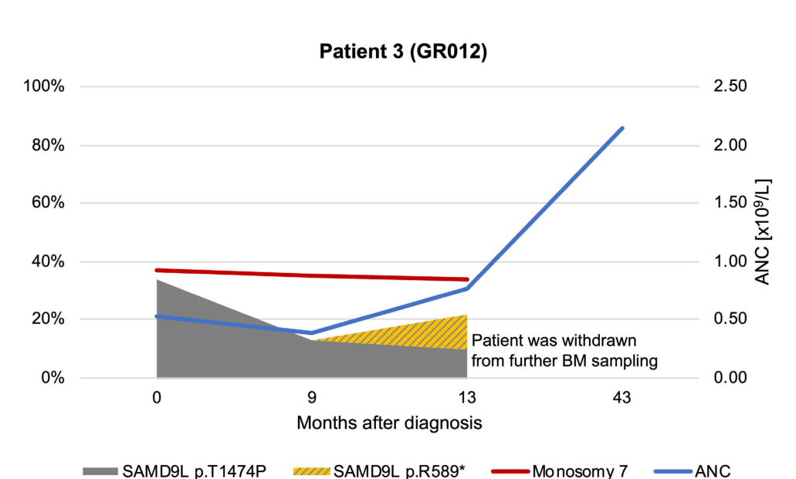

Autosomal dominant multisystem disorder caused by heterozygous germline gain-of-function variants in SAMD9L, an interferon-inducible negative regulator of cell proliferation on 7q21. The hyperactive protein represses global protein translation and restricts hematopoietic progenitor growth, producing cytopenias in a hypocellular marrow that usually present in infancy or early childhood, B- and NK-cell deficiency, and a predisposition to marrow failure, myelodysplasia and myeloid leukemia. A defining feature is frequent somatic genetic rescue in hematopoiesis. Clones that lose the mutant allele by monosomy 7 escape the growth block but carry myeloid-neoplasm risk (maladaptive rescue; monosomy 7 can be transient in young children), whereas clones with copy-neutral UPD7q or an in-cis somatic SAMD9L inactivating variant restore hematopoiesis (adaptive rescue). Neurologic disease (slowly progressive cerebellar ataxia, sensorimotor axonal neuropathy, white matter change) usually appears later, in adolescence or adulthood, and is not corrected by hematopoietic rescue or transplantation. ClinGen lumps ataxia-pancytopenia syndrome, monosomy 7 myelodysplasia and leukemia syndrome 1 and spinocerebellar ataxia 49 into this entity; GeneReviews additionally includes the truncating-variant SAMD9L-associated autoinflammatory subtype (SAAD). The paralogous SAMD9 disorder (MIRAGE syndrome and SAMD9-related myeloid predisposition) is a separate disease and is not covered here.
Ask a research question about SAMD9L-Related Spectrum and Myeloid Neoplasm Risk. OpenScientist will conduct autonomous deep research using the Disorder Mechanisms Knowledge Base and PubMed literature (typically 10-30 minutes).
Do not include personal health information in your question. Questions and results are cached in your browser's local storage.

name: SAMD9L-Related Spectrum and Myeloid Neoplasm Risk
creation_date: "2026-10-13T18:58:31Z"
description: >-
Autosomal dominant multisystem disorder caused by heterozygous germline
gain-of-function variants in SAMD9L, an interferon-inducible negative
regulator of cell proliferation on 7q21. The hyperactive protein represses
global protein translation and restricts hematopoietic progenitor growth,
producing cytopenias in a hypocellular marrow that usually present in infancy
or early childhood, B- and NK-cell deficiency, and a predisposition to marrow
failure, myelodysplasia and myeloid leukemia. A defining feature is frequent
somatic genetic rescue in hematopoiesis. Clones that lose the mutant allele by
monosomy 7 escape the growth block but carry myeloid-neoplasm risk (maladaptive
rescue; monosomy 7 can be transient in young children), whereas clones with
copy-neutral UPD7q or an in-cis somatic SAMD9L inactivating variant restore
hematopoiesis (adaptive rescue). Neurologic disease (slowly progressive
cerebellar ataxia, sensorimotor axonal neuropathy, white matter change)
usually appears later, in adolescence or adulthood, and is not corrected by
hematopoietic rescue or transplantation. ClinGen lumps ataxia-pancytopenia
syndrome, monosomy 7 myelodysplasia and leukemia syndrome 1 and
spinocerebellar ataxia 49 into this entity; GeneReviews additionally includes
the truncating-variant SAMD9L-associated autoinflammatory subtype (SAAD). The
paralogous SAMD9 disorder (MIRAGE syndrome and SAMD9-related myeloid
predisposition) is a separate disease and is not covered here.
category: Genetic
parents:
- hereditary neoplastic syndrome
synonyms:
- SAMD9L-related syndrome
- SAMD9L syndrome
disease_term:
preferred_term: SAMD9L-related spectrum and myeloid neoplasm risk
term:
id: MONDO:1060111
label: SAMD9L-related spectrum and myeloid neoplasm risk
references:
- reference: PMID:28570036
title: SAMD9L-Related Syndrome.
tags:
- GeneReviews
has_subtypes:
- name: ATXPC
display_name: Ataxia-pancytopenia syndrome
subtype_term:
preferred_term: ataxia-pancytopenia syndrome
term:
id: MONDO:0008038
label: ataxia-pancytopenia syndrome
description: >-
The originally described familial presentation (OMIM 159550): cerebellar
ataxia with variable cytopenias and predisposition to marrow failure and
myeloid leukemia, sometimes with monosomy 7. Curated here as a presentation
of the SAMD9L spectrum, following the ClinGen lumping, rather than as a
separate disease.
genes:
- preferred_term: SAMD9L
term:
id: hgnc:1349
label: SAMD9L
evidence:
- reference: PMID:27259050
reference_title: Ataxia-Pancytopenia Syndrome Is Caused by Missense Mutations in SAMD9L.
supports: SUPPORT
evidence_source: HUMAN_CLINICAL
snippet: >-
Ataxia-pancytopenia (AP) syndrome is characterized by cerebellar ataxia,
variable hematologic cytopenias, and predisposition to marrow failure and
myeloid leukemia, sometimes associated with monosomy 7.
explanation: Defines the ATXPC presentation in the gene-discovery report.
- reference: CGGV:assertion_1b553726-ca22-4116-bb50-373089ac4cb6-2025-01-14T170000.000Z
reference_title: SAMD9L / SAMD9L-related spectrum and myeloid neoplasm risk (Definitive)
supports: SUPPORT
evidence_source: OTHER
snippet: >-
the following disease entities have been lumped into one disease entity:
ataxia-pancytopenia syndrome (OMIM:159550), monosomy 7 myelodysplasia and
leukemia syndrome 1 (OMIM:252270), and spinocerebellar ataxia 49
(OMIM:619806).
explanation: >-
ClinGen CAYA Cancer Predisposition GCEP lumping decision placing ATXPC
inside MONDO:1060111.
- name: M7MLS1
display_name: Monosomy 7 myelodysplasia and leukemia syndrome 1
subtype_term:
preferred_term: monosomy 7 myelodysplasia and leukemia syndrome 1
term:
id: MONDO:0009646
label: monosomy 7 myelodysplasia and leukemia syndrome 1
description: >-
Familial or sporadic childhood myelodysplasia with loss of chromosome 7/7q
and hypocellular marrow, without neurologic or dysmorphic features at the
time of report. Median age at diagnosis in the founding series was 2.1
years. Shares the germline SAMD9L gain-of-function mechanism and the
somatic-rescue architecture of the other presentations.
genes:
- preferred_term: SAMD9L
term:
id: hgnc:1349
label: SAMD9L
evidence:
- reference: PMID:29217778
reference_title: Constitutional SAMD9L mutations cause familial myelodysplastic syndrome and transient monosomy 7.
supports: SUPPORT
evidence_source: HUMAN_CLINICAL
snippet: >-
Dysmorphic features or neurological symptoms were absent in our patients,
pointing to the notion that myelodysplasia with monosomy 7 can be a sole
manifestation of SAMD9L disease.
explanation: >-
Establishes isolated MDS with monosomy 7 as a presentation of germline
SAMD9L disease.
- reference: PMID:30046003
reference_title: Germline SAMD9 and SAMD9L mutations are associated with extensive genetic evolution and diverse hematologic outcomes.
supports: SUPPORT
evidence_source: HUMAN_CLINICAL
snippet: >-
we describe 16 siblings, the majority of which were phenotypically normal,
from 5 families diagnosed with myelodysplasia and leukemia syndrome with
monosomy 7 (MLSM7; OMIM 252270)
explanation: >-
Ties the OMIM 252270 familial monosomy 7 phenotype to germline SAMD9L
variants (4 of 5 families).
- name: SCA49
display_name: Spinocerebellar ataxia 49
subtype_term:
preferred_term: spinocerebellar ataxia 49
term:
id: MONDO:0030805
label: spinocerebellar ataxia 49
description: >-
Neurologic-only presentation described in one five-generation Menorcan
family carrying SAMD9L p.Ser626Leu: ataxia, gaze-evoked nystagmus,
dysarthria, sensory axonal polyneuropathy, pyramidal signs, cerebellar
atrophy and cerebral demyelination, with onset from 12 to 60 years. The
report found decreased SAMD9L protein in patient fibroblasts, so whether
this allele acts by the gain-of-function mechanism of the hematologic
presentations is not settled (see discussions).
genes:
- preferred_term: SAMD9L
term:
id: hgnc:1349
label: SAMD9L
evidence:
- reference: PMID:35310830
reference_title: New spinocerebellar ataxia subtype caused by SAMD9L mutation triggering mitochondrial dysregulation (SCA49).
supports: SUPPORT
evidence_source: HUMAN_CLINICAL
snippet: >-
We identified the c.1877C > T (p.Ser626Leu) pathogenic variant within the
SAMD9L gene as the disease causative genetic defect with a significant
log-odds score
explanation: Linkage-supported SAMD9L variant in the SCA49 family.
- name: SAAD
display_name: SAMD9L-associated autoinflammatory disease
subtype_term:
preferred_term: SAMD9L-associated autoinflammatory syndrome
term:
id: MONDO:0850066
label: SAMD9L-associated autoinflammatory syndrome
description: >-
Severe neonatal- or infantile-onset autoinflammatory presentation caused by
de novo frameshift variants that truncate SAMD9L C-terminal to its
NOD-like region, removing autoregulatory domains while preserving the
translational-repressor activity. Features include panniculitis with
lipoatrophy, interstitial lung disease, basal ganglia calcification,
cytopenias and B-cell deficiency. Included as a subtype because GeneReviews
treats it as a subtype of the SAMD9L-related syndrome; ClinGen's lumping of
MONDO:1060111 does not list it, and MONDO files it under autoinflammatory
syndrome rather than under this term.
genes:
- preferred_term: SAMD9L
term:
id: hgnc:1349
label: SAMD9L
evidence:
- reference: PMID:28570036
reference_title: SAMD9L-Related Syndrome.
supports: SUPPORT
evidence_source: OTHER
snippet: >-
SAMD9L-associated autoinflammatory subtype (SAAD) is a severe
autoinflammatory phenotype with infantile or neonatal onset caused by
pathogenic SAMD9L variants that truncate the autoregulatory domain but
preserve the protein's enzymatic function.
explanation: >-
GeneReviews places SAAD inside the SAMD9L-related syndrome as a subtype
and states its variant class.
- reference: PMID:31874111
reference_title: Distinct interferon signatures and cytokine patterns define additional systemic autoinflammatory diseases.
supports: SUPPORT
evidence_source: HUMAN_CLINICAL
snippet: >-
Among patients with panniculitis and progressive cytopenias, 2 patients
were compound heterozygous for potentially novel LRBA mutations, 4
patients harbored potentially novel splice variants in IKBKG (which
encodes NF-κB essential modulator [NEMO]), and 6 patients had de novo
frameshift mutations in SAMD9L.
explanation: >-
Original SAAD series of six patients with de novo SAMD9L frameshift
variants.
inheritance:
- name: Autosomal dominant inheritance
inheritance_term:
preferred_term: Autosomal dominant inheritance
term:
id: HP:0000006
label: Autosomal dominant inheritance
penetrance: INCOMPLETE
description: >-
Heterozygous germline SAMD9L variants, often de novo, transmitted as an
autosomal dominant trait with marked intrafamilial variability. Apparent
non-penetrance is frequent and is often explained by protective somatic
rescue in hematopoiesis. Somatic loss of the mutant allele in blood can mask
the germline variant, so parental testing should use non-hematopoietic DNA.
evidence:
- reference: PMID:28570036
reference_title: SAMD9L-Related Syndrome.
supports: SUPPORT
evidence_source: OTHER
snippet: >-
SAMD9L-related syndrome is an autosomal dominant disorder often caused by
a de novo germline pathogenic variant.
explanation: GeneReviews statement of inheritance and de novo frequency.
- reference: PMID:28570036
reference_title: SAMD9L-Related Syndrome.
supports: SUPPORT
evidence_source: OTHER
snippet: >-
reduced penetrance (often resulting from a "protective" second genetic
event)
explanation: >-
GeneReviews attributes reduced penetrance to protective somatic events.
- reference: PMID:29217778
reference_title: Constitutional SAMD9L mutations cause familial myelodysplastic syndrome and transient monosomy 7.
supports: SUPPORT
evidence_source: HUMAN_CLINICAL
snippet: Incomplete penetrance was noted in 30% (3/10) of mutation carriers.
explanation: Quantifies non-penetrance in four familial MDS pedigrees.
- reference: PMID:28570036
reference_title: SAMD9L-Related Syndrome.
supports: SUPPORT
evidence_source: OTHER
snippet: >-
Each child of an individual with SAMD9L-related syndrome has a 50% chance
of inheriting the SAMD9L pathogenic variant.
explanation: GeneReviews statement of the transmission risk to offspring.
genetic:
- name: SAMD9L
notes: >-
Most pathogenic alleles are germline missense gain-of-function variants
clustering in the middle region of the protein; the SAAD subtype carries de
novo frameshift variants that truncate the C-terminus and are also
gain-of-function. ClinGen additionally notes reported germline
loss-of-function SAMD9L alleles in adult-onset myeloid neoplasms (Nagata et
al. 2018, PMID:30322869, whose abstract is not cached here); that
mechanism is opposite to the pediatric one and is recorded as a
discussion rather than as part of this entry's causal chain.
gene_term:
preferred_term: SAMD9L
term:
id: hgnc:1349
label: SAMD9L
relationship_type: CAUSATIVE
variant_origin: GERMLINE
gene_disease_validity:
- validity_classification: DEFINITIVE
classified_by: CLINGEN
external_id: CGGV:assertion_1b553726-ca22-4116-bb50-373089ac4cb6-2025-01-14T170000.000Z
evidence:
- reference: CGGV:assertion_1b553726-ca22-4116-bb50-373089ac4cb6-2025-01-14T170000.000Z
reference_title: SAMD9L / SAMD9L-related spectrum and myeloid neoplasm risk (Definitive)
supports: SUPPORT
evidence_source: OTHER
snippet: "SAMD9L | HGNC:1349 | SAMD9L-related spectrum and myeloid neoplasm risk | MONDO:1060111 | AD | Definitive"
explanation: ClinGen Definitive autosomal dominant gene-disease validity for this MONDO term.
evidence:
- reference: PMID:28202457
reference_title: "Gain-of-function SAMD9L mutations cause a syndrome of cytopenia, immunodeficiency, MDS, and neurological symptoms."
supports: SUPPORT
evidence_source: HUMAN_CLINICAL
snippet: >-
Our results demonstrate that gain-of-function mutations in the tumor
suppressor SAMD9L cause cytopenia, immunodeficiency, variable neurological
presentation, and predisposition to MDS with -7/del(7q)
explanation: Establishes germline gain-of-function SAMD9L variants as causal.
- reference: PMID:39475954
reference_title: "Genetic and clinical spectrum of SAMD9 and SAMD9L syndromes: from variant interpretation to patient management."
supports: SUPPORT
evidence_source: HUMAN_CLINICAL
snippet: >-
Most patients (>90%) carry germ line missense GoF variants. A subgroup of
patients presenting with SAMD9L-associated inflammatory disease carry
frameshift-truncating variants that are also GoF.
explanation: >-
Registry of 243 published SAMD9/SAMD9L patients; the missense fraction is
pooled across both genes, the truncating-GoF statement is SAMD9L-specific.
- reference: CGGV:assertion_1b553726-ca22-4116-bb50-373089ac4cb6-2025-01-14T170000.000Z
reference_title: SAMD9L / SAMD9L-related spectrum and myeloid neoplasm risk (Definitive)
supports: SUPPORT
evidence_source: OTHER
snippet: >-
The mechanism of pathogenicity is reported to be gain of function for
onset in childhood, loss of function for onset in adulthood (PMID:
30322869).
explanation: >-
ClinGen's statement of the age-dependent mechanism split; the adult
loss-of-function arm is discussed separately.
pathophysiology:
- name: SAMD9L Gain-of-Function Variant
biological_scale: MOLECULAR
description: >-
Heterozygous germline missense variants, or C-terminal truncating
frameshifts in SAAD, render SAMD9L constitutively more active as an
antiproliferative factor. The germline variant is present in every cell,
including non-hematopoietic tissue.
genes:
- preferred_term: SAMD9L
term:
id: hgnc:1349
label: SAMD9L
molecular_functions:
- preferred_term: translation repressor activity
term:
id: GO:0030371
label: translation repressor activity
modifier: INCREASED
evidence:
- reference: PMID:34417303
reference_title: SAMD9L autoinflammatory or ataxia pancytopenia disease mutations activate cell-autonomous translational repression.
supports: SUPPORT
evidence_source: IN_VITRO
snippet: >-
Autoinflammatory disease associated with SAMD9L truncating mutations
appears to result from an interferon-induced translational repressor
whose activity goes unchecked by the loss of C-terminal domains that may
normally sense virus infection.
explanation: >-
Describes SAMD9L as a translational repressor whose activity the
truncating variants leave unchecked; grounds the molecular-function
binding. Whether the repression is enzymatic is not stated in the cached
sources.
- reference: PMID:28202457
reference_title: "Gain-of-function SAMD9L mutations cause a syndrome of cytopenia, immunodeficiency, MDS, and neurological symptoms."
supports: SUPPORT
evidence_source: IN_VITRO
snippet: >-
Consistent with a gain-of-function effect, ectopic expression of the 2
identified SAMD9L mutants decreased cell proliferation relative to
wild-type protein.
explanation: Functional evidence that the patient alleles are gain-of-function.
downstream:
- target: Global Translational Repression
causal_link_type: DIRECT
description: >-
Mutant SAMD9L, both truncating and ATXPC missense alleles, represses
protein synthesis more strongly than wild type at the same expression
level.
evidence:
- reference: PMID:34417303
reference_title: SAMD9L autoinflammatory or ataxia pancytopenia disease mutations activate cell-autonomous translational repression.
supports: SUPPORT
evidence_source: IN_VITRO
snippet: >-
The children's truncating mutations dramatically exaggerated
translational repression even at low levels of GFP-SAMD9L per cell, as
did a missense Arg986Cys mutation reported recurrently as causing ataxia
pancytopenia syndrome.
explanation: >-
Shows the variant-to-translational-repression step for both SAAD and
ATXPC alleles.
- target: Cerebellar and Peripheral Neurodegeneration
causal_link_type: INDIRECT_UNKNOWN_INTERMEDIATES
description: >-
The neurologic disease follows from the constitutional variant in neural
tissue rather than from the hematopoietic lesion: it persists when blood
has been rescued and progresses after transplantation. The intermediate
mechanism in neurons is unresolved.
evidence:
- reference: PMID:28202457
reference_title: "Gain-of-function SAMD9L mutations cause a syndrome of cytopenia, immunodeficiency, MDS, and neurological symptoms."
supports: SUPPORT
evidence_source: HUMAN_CLINICAL
snippet: >-
Clinically, revertant mosaicism was associated with milder disease, yet
neurological manifestations persisted in 3 individuals.
explanation: >-
Neurologic disease persists despite hematopoietic reversion, placing
its origin in the constitutional variant outside blood.
- reference: PMID:28570036
reference_title: SAMD9L-Related Syndrome.
supports: SUPPORT
evidence_source: OTHER
snippet: >-
HSCT does not appear to halt the progression of non-hematologic
manifestations.
explanation: >-
Transplantation corrects blood but not neurologic progression, again
separating the two arms.
- name: Interferon-Driven SAMD9L Induction
biological_scale: CELLULAR
description: >-
SAMD9L is an interferon-stimulated gene. Interferon signalling during
infection raises expression of the mutant protein in hematopoietic
progenitors and lymphocytes, which is proposed to explain why cytopenic and
myelodysplastic episodes follow infections.
biological_processes:
- preferred_term: response to type I interferon
term:
id: GO:0034340
label: response to type I interferon
- preferred_term: cellular response to type II interferon
term:
id: GO:0071346
label: cellular response to type II interferon
evidence:
- reference: PMID:28202457
reference_title: "Gain-of-function SAMD9L mutations cause a syndrome of cytopenia, immunodeficiency, MDS, and neurological symptoms."
supports: SUPPORT
evidence_source: IN_VITRO
snippet: >-
Stimulation of these cell types with interferon (IFN)-α or IFN-γ induced
SAMD9L expression.
explanation: Interferon-alpha and -gamma induce SAMD9L in B and NK cells.
- reference: PMID:28202457
reference_title: "Gain-of-function SAMD9L mutations cause a syndrome of cytopenia, immunodeficiency, MDS, and neurological symptoms."
supports: SUPPORT
evidence_source: HUMAN_CLINICAL
snippet: >-
3 developed MDS upon loss of the mutated SAMD9L allele following
intracellular infections associated with myeloid, B-, and natural killer
(NK)-cell deficiency.
explanation: Clinical observation that MDS followed infections in carriers.
- reference: PMID:28202457
reference_title: "Gain-of-function SAMD9L mutations cause a syndrome of cytopenia, immunodeficiency, MDS, and neurological symptoms."
supports: SUPPORT
evidence_source: HUMAN_CLINICAL
snippet: >-
The findings suggest a role for SAMD9L in regulating IFN-driven,
demand-adapted hematopoiesis.
explanation: >-
The authors' interpretation; supports interferon-driven SAMD9L activity as
a modifier of hematopoiesis, stated as a suggestion.
downstream:
- target: Global Translational Repression
causal_link_type: DIRECT
description: >-
Interferon raises expression of the truncated SAAD protein, which then
suppresses global protein synthesis.
evidence:
- reference: PMID:33724365
reference_title: Germline SAMD9L truncation variants trigger global translational repression.
supports: SUPPORT
evidence_source: IN_VITRO
snippet: >-
Taken together, our findings indicate that interferon-triggered SAMD9L
gain-of-function variants globally suppress translation.
explanation: Links interferon induction to the translational-repression step.
- name: Global Translational Repression
biological_scale: CELLULAR
description: >-
Hyperactive SAMD9L inhibits translational elongation and globally
suppresses protein synthesis cell autonomously, in proportion to its
expression level.
biological_processes:
- preferred_term: negative regulation of translation
term:
id: GO:0017148
label: negative regulation of translation
modifier: INCREASED
evidence:
- reference: PMID:33724365
reference_title: Germline SAMD9L truncation variants trigger global translational repression.
supports: SUPPORT
evidence_source: IN_VITRO
snippet: >-
This protein exhibited a gain-of-function phenotype, resulting in
interference in global protein synthesis via inhibition of translational
elongation.
explanation: Mechanism of the translational block for a truncating SAMD9L allele.
downstream:
- target: Hematopoietic Progenitor Growth Restriction and Death
causal_link_type: INDIRECT_UNKNOWN_INTERMEDIATES
description: >-
The translation block is proposed to account for the lineage-dominant
failure of hematopoietic progenitors and lymphocytes; the authors frame
the lineage specificity as a sensitivity difference.
evidence:
- reference: PMID:33724365
reference_title: Germline SAMD9L truncation variants trigger global translational repression.
supports: SUPPORT
evidence_source: IN_VITRO
snippet: >-
The complex-reported phenotype likely reflects lineage-dominant
sensitivities to this translation block.
explanation: >-
The authors' interpretation linking the translation block to the
lineage-restricted phenotype; stated as likely, not shown.
- target: Autoinflammation
causal_link_type: INDIRECT_UNKNOWN_INTERMEDIATES
description: >-
In SAAD, the unchecked translational repressor is proposed to underlie the
autoinflammatory disease; how translation arrest produces inflammation is
not established.
evidence:
- reference: PMID:34417303
reference_title: SAMD9L autoinflammatory or ataxia pancytopenia disease mutations activate cell-autonomous translational repression.
supports: SUPPORT
evidence_source: IN_VITRO
snippet: >-
Autoinflammatory disease associated with SAMD9L truncating mutations
appears to result from an interferon-induced translational repressor
whose activity goes unchecked by the loss of C-terminal domains that may
normally sense virus infection.
explanation: Authors' proposed link between translational repression and SAAD.
- name: Hematopoietic Progenitor Growth Restriction and Death
biological_scale: CELLULAR
description: >-
Mutant SAMD9L suppresses proliferation of hematopoietic stem and progenitor
cells and induces death of CD34+ cells, producing a hypocellular marrow
with multilineage cytopenia. This growth block is also the selective
pressure that favours any clone which loses or silences the mutant allele.
cell_types:
- preferred_term: CD34+ hematopoietic stem and progenitor cell
term:
id: CL:0000837
label: hematopoietic multipotent progenitor cell
biological_processes:
- preferred_term: negative regulation of cell population proliferation
term:
id: GO:0008285
label: negative regulation of cell population proliferation
modifier: INCREASED
evidence:
- reference: PMID:34621053
reference_title: "Clinical evolution, genetic landscape and trajectories of clonal hematopoiesis in SAMD9/SAMD9L syndromes."
supports: SUPPORT
evidence_source: IN_VITRO
snippet: >-
Despite inconclusive in silico prediction, 94% of SAMD9/9Lmut suppressed
HEK293 cell growth, and mutations expressed in CD34+ cells induced overt
cell death.
explanation: >-
Functional testing of patient alleles (pooled SAMD9 and SAMD9L) in a cell
line and in CD34+ progenitors.
- reference: PMID:33731850
reference_title: Pediatric MDS and bone marrow failure-associated germline mutations in SAMD9 and SAMD9L impair multiple pathways in primary hematopoietic cells.
supports: SUPPORT
evidence_source: IN_VITRO
snippet: >-
expression of these genes and their mutations leads to a cellular
environment that promotes DNA damage repair defects and ultimately
apoptosis in hematopoietic cells.
explanation: >-
Lentiviral expression of wild-type and mutant SAMD9/SAMD9L in primary
mouse and human HSPCs; results are reported jointly for the two genes.
downstream:
- target: Pancytopenia
causal_link_type: DIRECT
- target: Thrombocytopenia
causal_link_type: DIRECT
- target: Neutropenia
causal_link_type: DIRECT
- target: Bone Marrow Hypocellularity
causal_link_type: DIRECT
- target: Maladaptive Somatic Rescue by Monosomy 7
causal_link_type: DIRECT
description: >-
Cells that lose the chromosome 7 carrying the mutant allele escape the
growth block and are positively selected.
evidence:
- reference: PMID:30046003
reference_title: Germline SAMD9 and SAMD9L mutations are associated with extensive genetic evolution and diverse hematologic outcomes.
supports: SUPPORT
evidence_source: HUMAN_CLINICAL
snippet: >-
Expression of these gain-of-function SAMD9 and SAMD9L mutations reduces
cell cycle progression, and deep sequencing demonstrated selective
pressure favoring the outgrowth of clones that have either lost the
mutant allele or acquired revertant mutations.
explanation: >-
Links the antiproliferative effect to selection of clones that lose the
mutant allele.
- target: Adaptive Somatic Rescue by UPD7q or In-cis SAMD9L Inactivation
causal_link_type: DIRECT
description: >-
The same selective pressure favours clones that remove the mutant allele
without losing the rest of chromosome 7.
evidence:
- reference: PMID:27259050
reference_title: Ataxia-Pancytopenia Syndrome Is Caused by Missense Mutations in SAMD9L.
supports: SUPPORT
evidence_source: HUMAN_CLINICAL
snippet: >-
The hematopoietic cytopenias that characterize AP syndrome and the
selective advantage for clones that have lost the mutant allele support
the postulated role of SAMD9L in the regulation of cell proliferation.
explanation: Selective advantage for clones that lose the mutant allele.
- name: Maladaptive Somatic Rescue by Monosomy 7
biological_scale: CELLULAR
description: >-
Loss of chromosome 7 or 7q removes the mutant SAMD9L allele and relieves the
growth block, but leaves the clone haploinsufficient for chromosome 7 genes
including wild-type SAMD9L, SAMD9 and other 7q myeloid tumor suppressors.
In young children the monosomy 7 clone can regress spontaneously
(transient monosomy 7). Monosomy 7 has no HPO term, so it is modelled as
this node rather than as a phenotype.
evidence:
- reference: PMID:39475954
reference_title: "Genetic and clinical spectrum of SAMD9 and SAMD9L syndromes: from variant interpretation to patient management."
supports: SUPPORT
evidence_source: HUMAN_CLINICAL
snippet: >-
Somatic genetic rescue occurs in two-third of patients or more and
involves monosomy 7, which may spontaneously disappear (transient
monosomy 7) or progress to myelodysplastic syndrome (MDS)/leukemia
explanation: >-
Registry-level statement (pooled SAMD9/SAMD9L) of rescue frequency and the
two fates of monosomy 7.
- reference: PMID:34621053
reference_title: "Clinical evolution, genetic landscape and trajectories of clonal hematopoiesis in SAMD9/SAMD9L syndromes."
supports: SUPPORT
evidence_source: HUMAN_CLINICAL
snippet: >-
we found that 61% of SAMD9/9Lmut patients underwent somatic genetic
rescue (SGR) resulting in clonal hematopoiesis, of which 95% was
maladaptive (monosomy 7 ± cancer mutations)
explanation: >-
Pediatric MDS cohort (n = 669) quantification of rescue; pooled SAMD9 and
SAMD9L.
- reference: PMID:29146883
reference_title: A landscape of germ line mutations in a cohort of inherited bone marrow failure patients.
supports: SUPPORT
evidence_source: HUMAN_CLINICAL
snippet: >-
SAMD9 and SAMD9L patients often experienced transient aplasia and
monosomy 7
explanation: >-
Independent inherited marrow-failure cohort (germline DNA from skin
fibroblasts); SAMD9 and SAMD9L reported together.
- reference: PMID:37584291
reference_title: "Spontaneous remission and loss of monosomy 7: a window of opportunity for young children with SAMD9L syndrome."
supports: SUPPORT
evidence_source: HUMAN_CLINICAL
snippet: >-
Within 14 months from diagnosis, three children experienced spontaneous
hematological remission accompanied by a decrease in monosomy 7 clone
size.
explanation: Transient monosomy 7 in SAMD9L-specific infants (median age 0.6 years).
downstream:
- target: Myelodysplasia
causal_link_type: DIRECT
evidence:
- reference: PMID:28202457
reference_title: "Gain-of-function SAMD9L mutations cause a syndrome of cytopenia, immunodeficiency, MDS, and neurological symptoms."
supports: SUPPORT
evidence_source: HUMAN_CLINICAL
snippet: >-
3 developed MDS upon loss of the mutated SAMD9L allele following
intracellular infections associated with myeloid, B-, and natural
killer (NK)-cell deficiency.
explanation: MDS arose with loss of the mutated allele.
- target: Clonal Evolution with Cooperating Somatic Mutations
causal_link_type: DIRECT
description: >-
Monosomy 7 clones can acquire cooperating driver mutations and progress.
evidence:
- reference: PMID:30046003
reference_title: Germline SAMD9 and SAMD9L mutations are associated with extensive genetic evolution and diverse hematologic outcomes.
supports: SUPPORT
evidence_source: HUMAN_CLINICAL
snippet: >-
The myeloid malignancies of affected siblings acquired cooperating
mutations in genes that are also altered in sporadic cases of AML
characterized by monosomy 7.
explanation: Cooperating somatic mutations in monosomy 7 malignancies.
- name: Adaptive Somatic Rescue by UPD7q or In-cis SAMD9L Inactivation
biological_scale: CELLULAR
description: >-
Copy-neutral loss of heterozygosity of 7q (uniparental disomy) that retains
only the wild-type allele, or an acquired truncating SAMD9L variant in cis
with the germline variant, restores hematopoiesis without loss of chromosome
7. Revertant clones are associated with hematologic remission and milder
disease, and can make a carrier appear unaffected. This is a protective
terminal branch: it has no phenotype target because its consequence is the
absence of cytopenia.
evidence:
- reference: PMID:28202457
reference_title: "Gain-of-function SAMD9L mutations cause a syndrome of cytopenia, immunodeficiency, MDS, and neurological symptoms."
supports: SUPPORT
evidence_source: HUMAN_CLINICAL
snippet: >-
Five other individuals, 3 with spontaneously resolved cytopenic episodes
in infancy, harbored hematopoietic revertant mosaicism by uniparental
disomy of 7q, with loss of the mutated allele or additional in
cisSAMD9L truncating mutations.
explanation: >-
Both adaptive mechanisms in SAMD9L carriers, with resolved infantile
cytopenias. The missing space in "cisSAMD9L" is in the PubMed record.
- reference: PMID:39475954
reference_title: "Genetic and clinical spectrum of SAMD9 and SAMD9L syndromes: from variant interpretation to patient management."
supports: SUPPORT
evidence_source: HUMAN_CLINICAL
snippet: >-
adaptive clones with somatic SAMD9/9L compensatory mutations or
uniparental disomy 7q (UPD7q), both associated with remission
explanation: Registry-level statement that adaptive clones associate with remission.
- reference: PMID:37584291
reference_title: "Spontaneous remission and loss of monosomy 7: a window of opportunity for young children with SAMD9L syndrome."
supports: SUPPORT
evidence_source: HUMAN_CLINICAL
snippet: >-
Subclones with somatic SAMD9L mutations in cis were identified in five
patients, three of whom attained hematological remission.
explanation: >-
In-cis somatic SAMD9L subclones in infants with monosomy 7; two of the
five did not remit, so a rescue variant alone does not predict recovery.
The image is the paper's longitudinal course for one patient (somatic
in-cis variant fractions, monosomy 7 clone and neutrophil count).
images:
- SAMD9L-related_Spectrum_And_Myeloid_Neoplasm_Risk-deep-research-falcon_artifacts/image-1.png
- name: Clonal Evolution with Cooperating Somatic Mutations
biological_scale: CELLULAR
description: >-
Monosomy 7 clones accumulate cooperating somatic driver mutations (RUNX1
and EZH2 among those reported) and progress from refractory cytopenia to
MDS with excess blasts or AML.
evidence:
- reference: PMID:37584291
reference_title: "Spontaneous remission and loss of monosomy 7: a window of opportunity for young children with SAMD9L syndrome."
supports: SUPPORT
evidence_source: HUMAN_CLINICAL
snippet: >-
Two patients acquired RUNX1 and EZH2 mutations during the observation
period, of whom one progressed to myelodysplastic syndrome with excess of
blasts (MDS-EB).
explanation: Acquisition of cooperating mutations and progression under surveillance.
- reference: PMID:29217778
reference_title: Constitutional SAMD9L mutations cause familial myelodysplastic syndrome and transient monosomy 7.
supports: SUPPORT
evidence_source: HUMAN_CLINICAL
snippet: >-
Long-term observation revealed divergent outcomes with either progression
to leukemia and/or accumulation of driver mutations (n=2), persistent
monosomy 7 (n=4), and transient monosomy 7 followed by spontaneous
recovery with SAMD9L-wildtype UPD7q (n=2).
explanation: Divergent clonal outcomes in familial SAMD9L MDS.
downstream:
- target: Myelodysplasia
causal_link_type: DIRECT
- target: Acute Myeloid Leukemia
causal_link_type: DIRECT
evidence:
- reference: PMID:30046003
reference_title: Germline SAMD9 and SAMD9L mutations are associated with extensive genetic evolution and diverse hematologic outcomes.
supports: SUPPORT
evidence_source: HUMAN_CLINICAL
snippet: >-
Affected individuals had a highly variable clinical course that ranged
from mild and transient dyspoietic changes in the bone marrow to a rapid
progression of myelodysplastic syndrome (MDS) or acute myeloid leukemia
(AML) with monosomy 7.
explanation: Progression to MDS or AML with monosomy 7.
- name: B and NK Lymphocyte Deficiency
biological_scale: CELLULAR
description: >-
B and NK cells are disproportionately depleted, consistent with their high
SAMD9L inducibility and with enrichment of revertant clones in these
lineages. The resulting humoral and innate defect predisposes to
infections. Whether those infections feed back on SAMD9L through interferon
induction is plausible but not shown, so no edge is drawn for it.
cell_types:
- preferred_term: B cell
term:
id: CL:0000236
label: B cell
- preferred_term: natural killer cell
term:
id: CL:0000623
label: natural killer cell
evidence:
- reference: PMID:28570036
reference_title: SAMD9L-Related Syndrome.
supports: SUPPORT
evidence_source: OTHER
snippet: Immunodeficiency most often consists of B and NK cell deficiencies.
explanation: GeneReviews characterization of the immunodeficiency.
- reference: PMID:28202457
reference_title: "Gain-of-function SAMD9L mutations cause a syndrome of cytopenia, immunodeficiency, MDS, and neurological symptoms."
supports: SUPPORT
evidence_source: HUMAN_CLINICAL
snippet: >-
Somatic mutations were tracked to CD34+ hematopoietic progenitor cell
populations, being further enriched in B and NK cells.
explanation: >-
Revertant somatic variants are enriched in B and NK cells, consistent with
strong selection against the mutant allele in these lineages.
downstream:
- target: Decreased Total B Cell Count
causal_link_type: DIRECT
- target: Reduced Natural Killer Cell Count
causal_link_type: DIRECT
- target: Recurrent Infections
causal_link_type: DIRECT
- target: Hypogammaglobulinemia
causal_link_type: DIRECT
- name: Cerebellar and Peripheral Neurodegeneration
biological_scale: TISSUE
description: >-
Slowly progressive cerebellar degeneration with Purkinje-cell involvement,
sensorimotor axonal neuropathy and cerebral white matter change. Neurologic
onset is typically in adolescence or adulthood, later than the hematologic
disease, and imaging changes can precede symptoms. In the SCA49 family
SAMD9L localized to mitochondria and patient fibroblasts showed
mitochondrial perturbation; in one SAAD infant autopsy showed selective
Purkinje-cell loss. How SAMD9L variants damage neurons is unresolved.
cell_types:
- preferred_term: Purkinje cell
term:
id: CL:0000121
label: Purkinje cell
evidence:
- reference: PMID:28570036
reference_title: SAMD9L-Related Syndrome.
supports: SUPPORT
evidence_source: OTHER
snippet: >-
The neurologic manifestations typically have later onset – during
adolescence or less often adulthood – and include slowly progressive
cerebellar ataxia, sensorimotor axonal polyneuropathy, dysautonomia, and
paracentral retinal dysfunction.
explanation: GeneReviews summary of the neurologic arm and its onset.
- reference: PMID:33724365
reference_title: Germline SAMD9L truncation variants trigger global translational repression.
supports: SUPPORT
evidence_source: HUMAN_CLINICAL
snippet: >-
Autopsy demonstrated absent bone marrow and peripheral B cells as well as
selective loss of Langerhans and Purkinje cells.
explanation: Neuropathologic Purkinje-cell loss in a SAAD infant (single case).
- reference: PMID:35310830
reference_title: New spinocerebellar ataxia subtype caused by SAMD9L mutation triggering mitochondrial dysregulation (SCA49).
supports: SUPPORT
evidence_source: IN_VITRO
snippet: >-
We demonstrate the mitochondrial location of human SAMD9L protein, and its
decreased levels in patients' fibroblasts in addition to mitochondrial
perturbations.
explanation: Candidate mitochondrial mechanism, from the SCA49 family only.
downstream:
- target: Progressive Cerebellar Ataxia
causal_link_type: DIRECT
- target: Cerebellar Atrophy
causal_link_type: DIRECT
- target: Sensorimotor Neuropathy
causal_link_type: DIRECT
- target: Cerebral White Matter Abnormalities
causal_link_type: DIRECT
- target: Gaze-Evoked Nystagmus
causal_link_type: DIRECT
- target: Dysautonomia
causal_link_type: DIRECT
- target: Dysarthria
causal_link_type: DIRECT
- name: Autoinflammation
biological_scale: ORGANISM
description: >-
In the SAAD subtype, neonatal- or infantile-onset systemic inflammation with
an interferon-response gene signature that differs from the canonical
interferonopathies, presenting as panniculitis, lipoatrophy, interstitial
lung disease and basal ganglia calcification.
subtypes:
- SAAD
evidence:
- reference: PMID:31874111
reference_title: Distinct interferon signatures and cytokine patterns define additional systemic autoinflammatory diseases.
supports: SUPPORT
evidence_source: HUMAN_CLINICAL
snippet: >-
Patients with LRBA, IKBKG, and SAMD9L mutations showed a pattern of IRG
elevation that suggests prominent NF-κB activation different from the
canonical interferonopathies CANDLE, SAVI, and AGS.
explanation: Characterizes the inflammatory signature of SAAD.
downstream:
- target: Panniculitis
causal_link_type: DIRECT
- target: Lipoatrophy
causal_link_type: DIRECT
- target: Interstitial Lung Disease
causal_link_type: DIRECT
- target: Basal Ganglia Calcification
causal_link_type: DIRECT
phenotypes:
- category: Hematologic
name: Pancytopenia
description: >-
Cytopenias of all lineages in a hypocellular marrow, ranging from mild to
severe and frequently fluctuating, usually first presenting in infancy or
early childhood.
phenotype_term:
preferred_term: Pancytopenia
term:
id: HP:0001876
label: Pancytopenia
onset:
onset_category: INFANTILE
evidence:
- reference: PMID:28570036
reference_title: SAMD9L-Related Syndrome.
supports: SUPPORT
evidence_source: OTHER
snippet: >-
Cytopenias affecting all hematopoietic lineages arise in a typically
hypocellular marrow, range from mild to severe, and most often present in
infancy or early childhood.
explanation: GeneReviews description of the cytopenias and their onset.
- category: Hematologic
name: Thrombocytopenia
description: >-
Thrombocytopenia was the presenting finding in every patient of the
familial MDS series, with or without other cytopenias.
phenotype_term:
preferred_term: Thrombocytopenia
term:
id: HP:0001873
label: Thrombocytopenia
evidence:
- reference: PMID:29217778
reference_title: Constitutional SAMD9L mutations cause familial myelodysplastic syndrome and transient monosomy 7.
supports: SUPPORT
evidence_source: HUMAN_CLINICAL
snippet: >-
All patients presented with thrombocytopenia with or without additional
cytopenias and a hypocellular marrow without an increase of blasts.
explanation: Thrombocytopenia as the universal presenting cytopenia (n = 7).
- category: Hematologic
name: Neutropenia
description: >-
Moderate to severe neutropenia. Reported in all seven children of a
selected cohort (germline SAMD9L, monosomy 7, age under 5 years), so the
proportion is not a population frequency.
phenotype_term:
preferred_term: Neutropenia
term:
id: HP:0001875
label: Decreased total neutrophil count
evidence:
- reference: PMID:37584291
reference_title: "Spontaneous remission and loss of monosomy 7: a window of opportunity for young children with SAMD9L syndrome."
supports: SUPPORT
evidence_source: HUMAN_CLINICAL
snippet: >-
At diagnosis, all patients had moderate to severe neutropenia and three
children (P1, P2, P3) required platelet transfusions.
explanation: Neutropenia at diagnosis in a selected cohort of seven children.
- category: Hematologic
name: Bone Marrow Hypocellularity
description: Typically hypocellular marrow without increased blasts at presentation.
phenotype_term:
preferred_term: Bone marrow hypocellularity
term:
id: HP:0005528
label: Bone marrow hypocellularity
evidence:
- reference: PMID:29217778
reference_title: Constitutional SAMD9L mutations cause familial myelodysplastic syndrome and transient monosomy 7.
supports: SUPPORT
evidence_source: HUMAN_CLINICAL
snippet: >-
All patients presented with thrombocytopenia with or without additional
cytopenias and a hypocellular marrow without an increase of blasts.
explanation: Hypocellular marrow at presentation in the familial MDS series.
- category: Neoplasm
name: Myelodysplasia
description: >-
Childhood MDS, most often refractory cytopenia of childhood, frequently
with monosomy 7. In a consecutive pediatric MDS cohort germline
SAMD9/SAMD9L variants (pooled) accounted for 8% of cases. Median age at
diagnosis in the familial SAMD9L series was 2.1 years (range 1-42).
phenotype_term:
preferred_term: Myelodysplasia
term:
id: HP:0002863
label: Myelodysplasia
onset:
onset_category: CHILDHOOD
evidence:
- reference: PMID:34621053
reference_title: "Clinical evolution, genetic landscape and trajectories of clonal hematopoiesis in SAMD9/SAMD9L syndromes."
supports: SUPPORT
evidence_source: HUMAN_CLINICAL
snippet: >-
Among SAMD9/9Lmut cases, refractory cytopenia was the most prevalent MDS
subtype (90%); acquired monosomy 7 was present in 38%
explanation: MDS subtype and monosomy 7 frequency; pooled SAMD9 and SAMD9L.
- reference: PMID:34621053
reference_title: "Clinical evolution, genetic landscape and trajectories of clonal hematopoiesis in SAMD9/SAMD9L syndromes."
supports: SUPPORT
evidence_source: HUMAN_CLINICAL
snippet: In consecutively diagnosed MDS, germline SAMD9/9Lmut accounted for 8%
explanation: Share of pediatric MDS explained by germline SAMD9/SAMD9L (pooled).
- reference: PMID:29217778
reference_title: Constitutional SAMD9L mutations cause familial myelodysplastic syndrome and transient monosomy 7.
supports: SUPPORT
evidence_source: HUMAN_CLINICAL
snippet: Their median age at diagnosis was 2.1 years (range, 1-42).
explanation: Onset age of MDS with chromosome 7 loss in SAMD9L families.
- category: Neoplasm
name: Acute Myeloid Leukemia
description: >-
Progression to AML, usually with monosomy 7 and acquired cooperating
mutations. This is the somatic neoplasm the germline syndrome predisposes
to and is not itself curated as part of this entry.
phenotype_term:
preferred_term: Acute myeloid leukemia
term:
id: HP:0004808
label: Acute myeloid leukemia
evidence:
- reference: PMID:28570036
reference_title: SAMD9L-Related Syndrome.
supports: SUPPORT
evidence_source: OTHER
snippet: >-
Individuals have a predisposition to marrow failure, myelodysplasia, and
myeloid leukemia, sometimes associated with monosomy 7.
explanation: GeneReviews statement of myeloid leukemia predisposition.
- category: Immunologic
name: Decreased Total B Cell Count
phenotype_term:
preferred_term: B-cell deficiency
term:
id: HP:0010976
label: Decreased total B cell count
evidence:
- reference: PMID:28570036
reference_title: SAMD9L-Related Syndrome.
supports: SUPPORT
evidence_source: OTHER
snippet: Immunodeficiency most often consists of B and NK cell deficiencies.
explanation: GeneReviews.
- category: Immunologic
name: Reduced Natural Killer Cell Count
phenotype_term:
preferred_term: NK-cell deficiency
term:
id: HP:0040218
label: Reduced total natural killer cell count
evidence:
- reference: PMID:28570036
reference_title: SAMD9L-Related Syndrome.
supports: SUPPORT
evidence_source: OTHER
snippet: Immunodeficiency most often consists of B and NK cell deficiencies.
explanation: GeneReviews.
- category: Immunologic
name: Hypogammaglobulinemia
description: >-
Reported in five of seven children of a selected cohort (germline SAMD9L,
monosomy 7, age under 5 years); not a population frequency.
phenotype_term:
preferred_term: Hypogammaglobulinemia
term:
id: HP:0004313
label: Decreased circulating immunoglobulin concentration
evidence:
- reference: PMID:37584291
reference_title: "Spontaneous remission and loss of monosomy 7: a window of opportunity for young children with SAMD9L syndrome."
supports: SUPPORT
evidence_source: HUMAN_CLINICAL
snippet: >-
The most consistent findings of immunological impairment were
hypogammaglobulinemia found in five patients (P1, P2, P5, P6, P7) and B-
and natural killer (NK)-cell deficiency present in four (P2, P5, P6, P7).
explanation: Hypogammaglobulinemia in a selected cohort of seven children.
- category: Immunologic
name: Recurrent Infections
description: >-
Intracellular and other infections accompany the myeloid, B- and NK-cell
deficiency and have preceded MDS in reported carriers.
phenotype_term:
preferred_term: Recurrent infections
term:
id: HP:0002719
label: Recurrent infections
evidence:
- reference: PMID:28202457
reference_title: "Gain-of-function SAMD9L mutations cause a syndrome of cytopenia, immunodeficiency, MDS, and neurological symptoms."
supports: SUPPORT
evidence_source: HUMAN_CLINICAL
snippet: >-
3 developed MDS upon loss of the mutated SAMD9L allele following
intracellular infections associated with myeloid, B-, and natural killer
(NK)-cell deficiency.
explanation: Infections associated with the immune deficiency in carriers.
- category: Neurologic
name: Progressive Cerebellar Ataxia
description: >-
Slowly progressive cerebellar ataxia, typically beginning in adolescence
and less often in adulthood; absent in some carriers.
phenotype_term:
preferred_term: Slowly progressive cerebellar ataxia
term:
id: HP:0002073
label: Progressive cerebellar ataxia
onset:
onset_category: JUVENILE
evidence:
- reference: PMID:28570036
reference_title: SAMD9L-Related Syndrome.
supports: SUPPORT
evidence_source: OTHER
snippet: >-
The neurologic manifestations typically have later onset – during
adolescence or less often adulthood – and include slowly progressive
cerebellar ataxia, sensorimotor axonal polyneuropathy, dysautonomia, and
paracentral retinal dysfunction.
explanation: GeneReviews description and onset of the ataxia.
- category: Neurologic
name: Cerebellar Atrophy
description: Cerebellar atrophy on MRI, which may precede clinical ataxia.
phenotype_term:
preferred_term: Cerebellar atrophy
term:
id: HP:0001272
label: Cerebellar atrophy
evidence:
- reference: PMID:28570036
reference_title: SAMD9L-Related Syndrome.
supports: SUPPORT
evidence_source: OTHER
snippet: >-
Even before these manifestations are apparent, brain imaging may show
cerebellar atrophy and periventricular and deep white matter
abnormalities and/or cysts.
explanation: GeneReviews imaging findings, preceding symptoms.
- category: Neurologic
name: Cerebral White Matter Abnormalities
description: >-
Periventricular and deep white matter abnormalities and/or cysts on brain
MRI, which may precede symptoms.
phenotype_term:
preferred_term: Periventricular and deep white matter abnormalities
term:
id: HP:0002500
label: Abnormal cerebral white matter morphology
evidence:
- reference: PMID:28570036
reference_title: SAMD9L-Related Syndrome.
supports: SUPPORT
evidence_source: OTHER
snippet: >-
Even before these manifestations are apparent, brain imaging may show
cerebellar atrophy and periventricular and deep white matter
abnormalities and/or cysts.
explanation: >-
GeneReviews does not specify signal characteristics, so the general white
matter morphology term is bound rather than a hyperintensity term.
- category: Neurologic
name: Sensorimotor Neuropathy
description: Sensorimotor axonal polyneuropathy.
phenotype_term:
preferred_term: Sensorimotor axonal polyneuropathy
term:
id: HP:0007141
label: Sensorimotor neuropathy
evidence:
- reference: PMID:28570036
reference_title: SAMD9L-Related Syndrome.
supports: SUPPORT
evidence_source: OTHER
snippet: >-
The neurologic manifestations typically have later onset – during
adolescence or less often adulthood – and include slowly progressive
cerebellar ataxia, sensorimotor axonal polyneuropathy, dysautonomia, and
paracentral retinal dysfunction.
explanation: GeneReviews.
- category: Neurologic
name: Dysautonomia
phenotype_term:
preferred_term: Dysautonomia
term:
id: HP:0012332
label: Abnormal autonomic nervous system physiology
evidence:
- reference: PMID:28570036
reference_title: SAMD9L-Related Syndrome.
supports: SUPPORT
evidence_source: OTHER
snippet: >-
The neurologic manifestations typically have later onset – during
adolescence or less often adulthood – and include slowly progressive
cerebellar ataxia, sensorimotor axonal polyneuropathy, dysautonomia, and
paracentral retinal dysfunction.
explanation: GeneReviews.
- category: Neurologic
name: Dysarthria
phenotype_term:
preferred_term: Dysarthria
term:
id: HP:0001260
label: Dysarthria
evidence:
- reference: PMID:35310830
reference_title: New spinocerebellar ataxia subtype caused by SAMD9L mutation triggering mitochondrial dysregulation (SCA49).
supports: SUPPORT
evidence_source: HUMAN_CLINICAL
snippet: >-
affected individuals variably presenting with ataxia, nystagmus,
dysarthria, polyneuropathy, pyramidal signs, cerebellar atrophy and
distinctive cerebral demyelination
explanation: Dysarthria in the SCA49 family.
- reference: PMID:28570036
reference_title: SAMD9L-Related Syndrome.
supports: SUPPORT
evidence_source: OTHER
snippet: >-
referral for speech and language therapy, including evaluation for
alternative communication methods, as clinically indicated for dysarthria
explanation: >-
GeneReviews management of dysarthria across the syndrome; a management
statement, not a frequency.
- category: Neurologic
name: Gaze-Evoked Nystagmus
description: >-
Horizontal and vertical gaze-evoked nystagmus, an initial sign in the SCA49
family.
subtype: SCA49
phenotype_term:
preferred_term: Gaze-evoked nystagmus
term:
id: HP:0000640
label: Gaze-evoked nystagmus
evidence:
- reference: PMID:35310830
reference_title: New spinocerebellar ataxia subtype caused by SAMD9L mutation triggering mitochondrial dysregulation (SCA49).
supports: SUPPORT
evidence_source: HUMAN_CLINICAL
snippet: >-
Affected individuals presented with horizontal and vertical gaze-evoked
nystagmus and hyperreflexia as initial clinical signs, and a variable age
of onset ranging from 12 to 60 years.
explanation: Initial sign and onset range in SCA49.
- category: Dermatologic
name: Panniculitis
description: Neonatal or infantile nodular panniculitis in SAAD.
subtype: SAAD
phenotype_term:
preferred_term: Panniculitis
term:
id: HP:0012490
label: Panniculitis
onset:
onset_category: NEONATAL
evidence:
- reference: PMID:34417303
reference_title: SAMD9L autoinflammatory or ataxia pancytopenia disease mutations activate cell-autonomous translational repression.
supports: SUPPORT
evidence_source: HUMAN_CLINICAL
snippet: >-
Whole-genome sequencing of two children with leukocytoclastic
panniculitis, basal ganglia calcifications, raised blood inflammatory
markers, neutrophilia, anemia, thrombocytopaenia, and almost no B cells
revealed heterozygous de novo SAMD9L mutations
explanation: Panniculitis in two SAAD children.
- category: Dermatologic
name: Lipoatrophy
subtype: SAAD
phenotype_term:
preferred_term: Lipoatrophy
term:
id: HP:0100578
label: Lipoatrophy
evidence:
- reference: PMID:28570036
reference_title: SAMD9L-Related Syndrome.
supports: SUPPORT
evidence_source: OTHER
snippet: >-
This phenotype may include cytopenias, skin inflammation, lipoatrophy,
early-onset interstitial lung disease, and basal ganglia calcifications.
explanation: GeneReviews SAAD feature list.
- category: Respiratory
name: Interstitial Lung Disease
description: Early-onset interstitial lung disease in SAAD.
subtype: SAAD
phenotype_term:
preferred_term: Interstitial lung disease
term:
id: HP:0006530
label: Abnormal pulmonary interstitial morphology
evidence:
- reference: PMID:28570036
reference_title: SAMD9L-Related Syndrome.
supports: SUPPORT
evidence_source: OTHER
snippet: >-
This phenotype may include cytopenias, skin inflammation, lipoatrophy,
early-onset interstitial lung disease, and basal ganglia calcifications.
explanation: GeneReviews SAAD feature list.
- category: Neurologic
name: Basal Ganglia Calcification
subtype: SAAD
phenotype_term:
preferred_term: Basal ganglia calcification
term:
id: HP:0002135
label: Basal ganglia calcification
evidence:
- reference: PMID:34417303
reference_title: SAMD9L autoinflammatory or ataxia pancytopenia disease mutations activate cell-autonomous translational repression.
supports: SUPPORT
evidence_source: HUMAN_CLINICAL
snippet: >-
Whole-genome sequencing of two children with leukocytoclastic
panniculitis, basal ganglia calcifications, raised blood inflammatory
markers, neutrophilia, anemia, thrombocytopaenia, and almost no B cells
revealed heterozygous de novo SAMD9L mutations
explanation: Basal ganglia calcification in two SAAD children.
diagnosis:
- name: Germline SAMD9L testing on non-hematopoietic DNA
description: >-
Diagnosis rests on a heterozygous germline SAMD9L gain-of-function variant.
Because monosomy 7 or UPD7q can lower or erase the variant allele fraction
in blood, marrow, buccal or saliva DNA, a negative or apparently somatic
result in those tissues does not exclude the disease, and testing of a
non-hematopoietic tissue may be needed.
diagnosis_term:
preferred_term: Germline genetic testing of non-hematopoietic tissue
term:
id: NCIT:C15709
label: Genetic Testing
evidence:
- reference: PMID:28570036
reference_title: SAMD9L-Related Syndrome.
supports: SUPPORT
evidence_source: OTHER
snippet: >-
Acquired monosomy 7 or uniparental disomy of 7q can reduce the variant
allele frequency of a germline SAMD9L pathogenic variant in blood-, bone
marrow-, buccal mucosa-, or saliva-derived DNA, leading to failure to
identify the pathogenic variant or misclassification as somatic.
explanation: GeneReviews diagnostic caveat specific to this disease.
- reference: PMID:28570036
reference_title: SAMD9L-Related Syndrome.
supports: SUPPORT
evidence_source: OTHER
snippet: >-
The diagnosis of SAMD9L-related syndrome is established in a proband with
a heterozygous germline gain-of-function pathogenic variant in SAMD9L
identified by molecular genetic testing.
explanation: GeneReviews diagnostic criterion.
treatments:
- name: Allogeneic Hematopoietic Stem Cell Transplantation
description: >-
Considered for MDS, leukemia, severe immune deficiency or autoinflammatory
manifestations. Timing is the central pediatric question, because monosomy
7 can regress spontaneously in young children but delay carries risk of
infection and progression. Transplantation does not halt the neurologic
disease.
therapeutic_modality: CELL_THERAPY
treatment_term:
preferred_term: allogeneic hematopoietic stem cell transplantation
term:
id: NCIT:C15431
label: Hematopoietic Cell Transplantation
target_mechanisms:
- target: Hematopoietic Progenitor Growth Restriction and Death
description: Replaces the SAMD9L-mutant hematopoietic compartment.
- target: Clonal Evolution with Cooperating Somatic Mutations
description: Eradicates monosomy 7 and malignant clones.
- target: Autoinflammation
description: >-
Replaces the hematopoietic source of inflammation in SAAD; supported by a
single case.
evidence:
- reference: PMID:28570036
reference_title: SAMD9L-Related Syndrome.
supports: SUPPORT
evidence_source: OTHER
snippet: >-
consider hematopoietic stem cell transplantation (HSCT) and/or
chemotherapy for myelodysplasia, leukemia, severe immune deficiency, or
autoinflammatory manifestations
explanation: GeneReviews management recommendation.
- reference: PMID:37584291
reference_title: "Spontaneous remission and loss of monosomy 7: a window of opportunity for young children with SAMD9L syndrome."
supports: SUPPORT
evidence_source: HUMAN_CLINICAL
snippet: >-
However, they also indicate that delaying HSCT poses a substantial risk of
severe infection and disease progression.
explanation: Risk of deferring transplant in SAMD9L infants with monosomy 7.
- reference: PMID:36969289
reference_title: "Case report: De novo SAMD9L truncation causes neonatal-onset autoinflammatory syndrome which was successfully treated with hematopoietic stem cell transplantation."
supports: SUPPORT
evidence_source: HUMAN_CLINICAL
snippet: >-
The patient underwent a fully matched unrelated HSCT and has since been in
inflammatory remission 5 years post-HSCT.
explanation: >-
Single SAAD case (p.F889Sfs*2) in sustained inflammatory remission after
HSCT; a case report, not a response rate.
- name: Hematologic and Genetic Surveillance
description: >-
No established guideline exists. GeneReviews suggests hematology review and
CBC every 6-12 months, baseline and annual marrow examination by shared
decision, more frequent monitoring for new cytopenias or monosomy 7, and
annual immunologic evaluation. In infants with monosomy 7, close genetic
surveillance of clone size and acquired mutations is used to time HSCT.
treatment_term:
preferred_term: hematologic and cytogenetic surveillance
notes: >-
Left unbound: NCIT:C15719 Surveillance exists but is outside the
TreatmentActionTerm dynamic enum.
target_mechanisms:
- target: Maladaptive Somatic Rescue by Monosomy 7
description: Tracks monosomy 7 clone size and regression.
- target: Clonal Evolution with Cooperating Somatic Mutations
description: Detects acquisition of cooperating driver mutations.
evidence:
- reference: PMID:28570036
reference_title: SAMD9L-Related Syndrome.
supports: SUPPORT
evidence_source: OTHER
snippet: >-
There are no established surveillance guidelines but suggested approaches
include: clinical evaluation with a hematologist every six to 12 months
depending on age and presence of cytopenias or monosomy 7; complete blood
count with differential every six to 12 months; consider bone marrow
evaluation at baseline and annually based on shared decision making with
the individual and family
explanation: GeneReviews suggested surveillance.
- reference: PMID:37584291
reference_title: "Spontaneous remission and loss of monosomy 7: a window of opportunity for young children with SAMD9L syndrome."
supports: SUPPORT
evidence_source: HUMAN_CLINICAL
snippet: >-
surveillance of patients with SAMD9L syndrome and monosomy 7 is critical
to define the evolving genetic landscape and to determine the appropriate
timing of HSCT
explanation: Surveillance-first approach in seven infants with monosomy 7.
- name: Transfusion Support
description: Red cell and/or platelet transfusion for symptomatic cytopenias.
therapeutic_modality: OTHER
treatment_term:
preferred_term: red cell and platelet transfusion
term:
id: NCIT:C15192
label: Blood Transfusion
target_phenotypes:
- preferred_term: Pancytopenia
term:
id: HP:0001876
label: Pancytopenia
evidence:
- reference: PMID:28570036
reference_title: SAMD9L-Related Syndrome.
supports: SUPPORT
evidence_source: OTHER
snippet: >-
Provide supportive care with red cell and/or platelet transfusions as
needed
explanation: GeneReviews supportive care.
- name: Corticosteroids or JAK Inhibitors for Autoinflammation
description: >-
Considered for autoinflammatory (SAAD) manifestations; supported by expert
recommendation, not by trial data.
therapeutic_modality: SMALL_MOLECULE
treatment_term:
preferred_term: Pharmacotherapy
term:
id: NCIT:C15986
label: Pharmacotherapy
therapeutic_agent:
- preferred_term: corticosteroid
term:
id: CHEBI:50858
label: corticosteroid
- preferred_term: JAK inhibitor
term:
id: NCIT:C172200
label: JAK Inhibitor
target_mechanisms:
- target: Autoinflammation
description: Suppresses the inflammatory arm in SAAD.
evidence:
- reference: PMID:28570036
reference_title: SAMD9L-Related Syndrome.
supports: SUPPORT
evidence_source: OTHER
snippet: Consider corticosteroids or JAK inhibitors for autoinflammatory manifestations
explanation: GeneReviews management recommendation.
- name: Immunoglobulin Replacement
description: Considered to reduce infections that may exacerbate disease.
therapeutic_modality: PROTEIN_REPLACEMENT
treatment_term:
preferred_term: immunoglobulin replacement therapy
term:
id: NCIT:C62710
label: Immunoglobulin Therapy
target_mechanisms:
- target: B and NK Lymphocyte Deficiency
description: Replaces deficient humoral immunity.
target_phenotypes:
- preferred_term: Hypogammaglobulinemia
term:
id: HP:0004313
label: Decreased circulating immunoglobulin concentration
evidence:
- reference: PMID:28570036
reference_title: SAMD9L-Related Syndrome.
supports: SUPPORT
evidence_source: OTHER
snippet: >-
consider immunoglobulin replacement to reduce infections that may
exacerbate disease
explanation: GeneReviews management recommendation.
- name: Riluzole Trial for Ataxia
description: >-
A trial of riluzole may be considered for ataxia symptoms, alongside
supportive rehabilitation; no SAMD9L-specific efficacy data are cited.
therapeutic_modality: SMALL_MOLECULE
treatment_term:
preferred_term: Pharmacotherapy
term:
id: NCIT:C15986
label: Pharmacotherapy
therapeutic_agent:
- preferred_term: riluzole
term:
id: CHEBI:8863
label: Riluzole
target_phenotypes:
- preferred_term: Slowly progressive cerebellar ataxia
term:
id: HP:0002073
label: Progressive cerebellar ataxia
evidence:
- reference: PMID:28570036
reference_title: SAMD9L-Related Syndrome.
supports: SUPPORT
evidence_source: OTHER
snippet: consider a trial of riluzole to improve ataxia symptoms
explanation: GeneReviews management suggestion.
- name: Avoidance of Antiplatelet, Anticoagulant and Thrombolytic Agents in Severe Thrombocytopenia
description: >-
NSAIDs, anticoagulants and thrombolytics are contraindicated when
thrombocytopenia is severe, and otherwise used with caution because the
cytopenias fluctuate. An expert precaution, not a trial result.
treatment_term:
preferred_term: avoidance of NSAIDs, anticoagulants and thrombolytics
notes: >-
Left unbound. An OLS search of NCIT for "avoidance" returns NCIT:C54264
Avoidance, which sits under Behavior/Activity rather than Clinical
Intervention or Procedure, plus questionnaire items. NCIT:C15900 Lifestyle
Therapy, used for avoidance rows elsewhere in the KB, names a lifestyle
intervention rather than a drug contraindication.
target_phenotypes:
- preferred_term: Thrombocytopenia
term:
id: HP:0001873
label: Thrombocytopenia
evidence:
- reference: PMID:28570036
reference_title: SAMD9L-Related Syndrome.
supports: SUPPORT
evidence_source: OTHER
snippet: >-
Nonsteroidal anti-inflammatory agents, anticoagulants, and thrombolytic
agents are contraindicated if severe thrombocytopenia is present and
otherwise should be used with caution given the fluctuating nature of the
cytopenias
explanation: GeneReviews agents/circumstances to avoid.
- name: Avoidance of Alcohol and Sedating Medications
description: >-
Alcohol and centrally acting sedating medications can worsen gait and
coordination in individuals with ataxia. An expert precaution.
treatment_term:
preferred_term: avoidance of alcohol and sedating medications
notes: >-
Left unbound for the same reason as the antithrombotic avoidance row.
target_phenotypes:
- preferred_term: Slowly progressive cerebellar ataxia
term:
id: HP:0002073
label: Progressive cerebellar ataxia
evidence:
- reference: PMID:28570036
reference_title: SAMD9L-Related Syndrome.
supports: SUPPORT
evidence_source: OTHER
snippet: >-
avoid alcohol and centrally acting medications that cause sedation, which
can increase problems with gait and coordination
explanation: GeneReviews agents/circumstances to avoid.
- name: Cascade Testing of At-Risk Relatives
description: >-
Testing for the familial variant identifies relatives who would benefit from
hematologic surveillance. Because of somatic rescue, testing of relatives
should use non-hematopoietic DNA when blood is negative.
therapeutic_modality: BEHAVIORAL
treatment_term:
preferred_term: Genetic counseling and cascade testing
term:
id: NCIT:C15240
label: Genetic Counseling
evidence:
- reference: PMID:28570036
reference_title: SAMD9L-Related Syndrome.
supports: SUPPORT
evidence_source: OTHER
snippet: >-
Offer molecular genetic testing for the familial SAMD9L pathogenic variant
to asymptomatic at-risk relatives to identify those who would benefit from
hematologic surveillance and early treatment of severe cytopenias or
myeloid malignancy.
explanation: GeneReviews recommendation for relatives.
animal_models:
- name: Samd9l-deficient mouse
species: Mouse
genotype: Samd9l+/- and Samd9l-/-
publication: PMID:24029230
description: >-
Heterozygous and homozygous Samd9l knockout mice develop myeloid disease
resembling human -7/7q- disease. This is a loss-of-function model: it does
not model the germline gain-of-function lesion, but models the consequence
of losing one SAMD9L copy, which is part of what a monosomy 7 rescue clone
carries.
modeled_mechanisms:
- target: Maladaptive Somatic Rescue by Monosomy 7
relationship: PARTIALLY_RECAPITULATES
fidelity: LOW
description: >-
Reproduces the myeloid consequence of SAMD9L haploinsufficiency that a
monosomy 7 clone carries.
limitations: >-
Models loss of function, the opposite of the germline lesion; no
gain-of-function background and no loss of the other chromosome 7 genes.
evidence:
- reference: PMID:24029230
reference_title: "Haploinsufficiency of SAMD9L, an endosome fusion facilitator, causes myeloid malignancies in mice mimicking human diseases with monosomy 7."
supports: SUPPORT
evidence_source: MODEL_ORGANISM
snippet: >-
We established SAMD9L-deficient mice and found that SAMD9L(+/-) mice as
well as SAMD9L(-/-) mice develop myeloid diseases resembling human
diseases associated with -7/7q-.
explanation: Samd9l loss in mice produces -7/7q-like myeloid disease.
discussions:
- discussion_id: adult_loss_of_function_arm
kind: CONTROVERSY
prompt: >-
Do germline loss-of-function SAMD9L alleles in adult-onset myeloid
neoplasms belong to this disease?
attaches_to:
- genetic#SAMD9L
rationale: >-
ClinGen's curation of MONDO:1060111 states that mechanism is gain of
function for childhood onset and loss of function for adult onset, citing
Nagata et al. 2018 (PMID:30322869). The pathograph here models only the
gain-of-function chain. A loss-of-function allele would predispose by a
different route (reduced tumor suppressor dosage, as in the Samd9l knockout
mouse), with no growth restriction and no selection for rescue, and may be
better modelled separately. The Nagata abstract is not available in the
reference cache, so the adult arm is not curated as a claim.
evidence:
- reference: CGGV:assertion_1b553726-ca22-4116-bb50-373089ac4cb6-2025-01-14T170000.000Z
reference_title: SAMD9L / SAMD9L-related spectrum and myeloid neoplasm risk (Definitive)
supports: SUPPORT
evidence_source: OTHER
snippet: >-
The mechanism of pathogenicity is reported to be gain of function for
onset in childhood, loss of function for onset in adulthood (PMID:
30322869).
explanation: ClinGen statement of the two mechanisms.
- discussion_id: neurodegeneration_mechanism
kind: KNOWLEDGE_GAP
prompt: >-
How do germline SAMD9L variants cause cerebellar and peripheral
neurodegeneration, and does the SCA49 allele act by gain or loss of
function?
attaches_to:
- pathophysiology#Cerebellar and Peripheral Neurodegeneration
rationale: >-
The hematologic mechanism (translational repression and growth restriction
relieved by somatic rescue) does not explain neurologic disease, which
persists after hematopoietic rescue and transplantation. The SCA49 study
reports decreased SAMD9L protein and mitochondrial perturbation in
fibroblasts, which is not obviously a gain-of-function signature, while the
ATXPC missense Arg986Cys is gain-of-function in translation assays. Whether
one mechanism covers both, and whether neurons are sensitive to the same
translation block, is not established.
- discussion_id: monosomy7_transplant_timing
kind: OPEN_QUESTION
prompt: >-
In infants with SAMD9L disease and monosomy 7, when should surveillance give
way to HSCT?
attaches_to:
- treatments#Allogeneic Hematopoietic Stem Cell Transplantation
rationale: >-
Monosomy 7 regresses spontaneously in some young children, but delay risks
severe infection and progression; the cited series is small and there are
no evidence-based surveillance protocols.
evidence:
- reference: PMID:39475954
reference_title: "Genetic and clinical spectrum of SAMD9 and SAMD9L syndromes: from variant interpretation to patient management."
supports: SUPPORT
evidence_source: HUMAN_CLINICAL
snippet: >-
Future natural history studies, especially in patients with monosomy 7,
will help formulate evidence-based surveillance protocols and optimize
transplant timing and outcomes.
explanation: Authors identify transplant timing as unresolved.
notes: >-
GeneReviews (PMID:28570036, "SAMD9L-Related Syndrome") is the phenotype
baseline. Its abstract also lists paracentral retinal dysfunction; that is
not curated as a phenotype because the abstract does not name the test, and
the matching HPO term (HP:0030489, abnormal paracentral response of
multifocal electroretinogram) would assert a measurement the source does not
report.
Deep research results are used as seeds for research; they do not undergo the same validation as the main records and may contain errors. How we use deep research.
Create: SAMD9L-related_Spectrum_And_Myeloid_Neoplasm_Risk · 2026-10-13T19:28:24Z · View source
New entry for MONDO:1060111 (SAMD9L-related spectrum and myeloid neoplasm risk). Curated as one DISEASE entry with four has_subtypes rows: ATXPC (MONDO:0008038), M7MLS1 (MONDO:0009646) and SCA49 (MONDO:0030805), which ClinGen's CAYA Cancer Predisposition GCEP lumped into this MONDO term (cited from the cached CGGV record), plus SAAD (MONDO:0850066), included because the GeneReviews chapter (PMID:28570036) treats it as a subtype although the ClinGen lumping does not list it. SAMD9-related disease (MIRAGE and SAMD9-related myeloid predisposition) is excluded. HP:0001442 was not bound: the causal variant is germline, and the hematopoietic mosaicism is somatic genetic rescue, not a post-zygotic causal variant. The pathograph runs from the germline gain-of-function variant through translational repression and hematopoietic progenitor growth restriction to cytopenias, then branches into maladaptive rescue by monosomy 7 (leading to MDS and, with cooperating mutations, AML) and adaptive rescue by UPD7q or in-cis SAMD9L inactivation; separate branches cover B/NK deficiency, neurodegeneration (mechanism unknown, recorded as a knowledge gap) and SAAD autoinflammation. ClinGen Definitive AD tier copied from the cached CGGV record. GeneReviews abstract used as the phenotype baseline; paracentral retinal dysfunction is not curated as a phenotype (reason in entry notes). One falcon deep-research report was used as a lead only. A second falcon submission was started in error, after a log file shared with another session was misread as a failed first run; it was killed before it produced a report, and only the first run's report is committed. Its claim that MONDO:1060111 could not be confirmed was rejected (OLS and the ClinGen record confirm it). Its claims of neurologic onset from 10 to 62 years and Purkinje-cell loss in the original family were not used because they come from full-text pages not in the reference cache. Its 10/179 SAMD9L figure from the Bluteau cohort was not used because the abstract reports SAMD9 and SAMD9L pooled (16 of 86 diagnosed). Report validation: 8/8 references resolved, needs_review set only for a MONDO label mismatch caused by the template's '(if available)' text. preflight-dr exited 2 because the local mondo.db is absent; the report was checked by hand and is about SAMD9L throughout. Validation: just validate, validate-terms, count-verified-snippets (80/80), check-entity-refs, check-causal-targets, check-duplicate-keys, check-qualifier-terms, check-genereviews (TAGGED), list-gene-term-mismatches, check-block-scalar-comments, the whole-KB snippet/title/grading/retired-prose/environmental/coarse/reference-title gates, and validate-disorders all passed. Gaps: Nagata 2018 (PMID:30322869, adult germline loss-of-function) has no cached abstract, so the adult arm is recorded only as a discussion citing the ClinGen summary; several quantitative statements are pooled across SAMD9 and SAMD9L and are labelled as such; no population prevalence was found.
Question: You are an expert researcher providing comprehensive, well-cited information.
Provide detailed information focusing on: 1. Key concepts and definitions with current understanding 2. Recent developments and latest research (prioritize 2023-2024 sources) 3. Current applications and real-world implementations 4. Expert opinions and analysis from authoritative sources 5. Relevant statistics and data from recent studies
Format as a comprehensive research report with proper citations. Include URLs and publication dates where available. Always prioritize recent, authoritative sources and provide specific citations for all major claims.
Please provide a comprehensive research report on SAMD9L-Related Spectrum and Myeloid Neoplasm Risk covering all of the disease characteristics listed below. This report will be used to populate a disease knowledge base entry. Be thorough and cite primary literature (PMID preferred) for all claims.
For each section, suggested databases/resources are listed. These are the first places you should search for information on each topic.
Search first: OMIM, Orphanet, ICD-10/ICD-11, MeSH, PubMed
Search first: PubMed, Cochrane Library, UpToDate, clinical guidelines, ClinVar, ClinGen, GWAS Catalog, PheGenI, CTD, CDC, WHO, epidemiological databases
Search first: PubMed, Cochrane Library, clinical trial databases, GWAS Catalog, gnomAD, WHO, CDC, nutrition databases
Search first: CTD, PubMed, PheGenI, GxE databases
Search first: HPO (Human Phenotype Ontology), OMIM, Orphanet, PubMed, clinicaltrials.gov, MedDRA, SNOMED CT, DECIPHER, LOINC
For each phenotype, provide: - Phenotype type: symptoms, clinical signs, physical manifestations, behavioral changes, or laboratory abnormalities
For symptoms/signs: HPO, OMIM, Orphanet, PubMed For behavioral changes: HPO, DSM, RDoC (Research Domain Criteria), PubMed For laboratory abnormalities: LOINC, SNOMED CT, LabTests Online, PubMed - Phenotype characteristics: Search first: OMIM, Orphanet, HPO, PubMed - Age of symptom onset (neonatal, childhood, adult-onset, late-onset) - Symptom severity (mild, moderate, severe, variable) - Symptom progression (stable, progressive, episodic, fluctuating) - Frequency among affected individuals (percentage or qualitative) - Quality of life impact: Effects on daily functioning and well-being (per-phenotype when possible) Search first: EQ-5D database, SF-36, WHO QOL databases, PubMed - Suggest HPO (Human Phenotype Ontology) terms for each phenotype
Search first: OMIM, ClinVar, HGMD, Ensembl, NCBI Gene
Search first: ENCODE, Roadmap Epigenomics, MethBase, DiseaseMeth
Search first: DECIPHER, ClinVar, ECARUCA, UCSC Genome Browser
Search first: CTD (Comparative Toxicogenomics Database), TOXNET, PubMed, EPA databases
Search first: CDC databases, WHO, PubMed, NHANES
Search first: NCBI Taxonomy, ViPR, BV-BRC, MicrobeDB, GIDEON
Present this section as an ordered causal chain first, then the detail below. Open with a numbered sequence of mechanistic steps running from the initiating lesion (mutation, exposure, infection) to the clinical manifestation, one step per line, each naming what it causes next. State the causal verb explicitly ("leads to", "results in") and say where a step is inferred rather than demonstrated. Where the mechanism branches, show the branch. The categories below are a checklist of what to cover within those steps, not the organizing structure — a step may draw on several of them, and a category may contribute to several steps.
Search first: KEGG, Reactome, WikiPathways, PathBank, BioCyc
Search first: Gene Ontology (GO), Reactome, KEGG, PubMed
Search first: UniProt, PDB (Protein Data Bank), InterPro, Pfam, AlphaFold
Search first: KEGG, BioCyc, HMDB (Human Metabolome Database), BRENDA
Search first: ImmPort, Immunome Database, IEDB, Gene Ontology
Search first: PubMed, Gene Ontology, Reactome
Search first: BRENDA, UniProt, KEGG, OMIM, PubMed
Search first: ENCODE, Roadmap Epigenomics, MethBase, DiseaseMeth
For each mechanism, describe: - The causal chain from initial trigger to clinical manifestation - Which mechanisms are upstream vs downstream - What cell types and biological processes are involved - Suggest GO terms for biological processes and CL terms for cell types
Search first: Uberon, FMA (Foundational Model of Anatomy), OMIM, HPO, ICD-11, MeSH, SNOMED CT
Search first: Uberon, Human Protein Atlas, Cell Ontology, Human Cell Atlas, CellMarker, PanglaoDB
Search first: Gene Ontology (Cellular Component), UniProt, Human Protein Atlas
Search first: OMIM, Orphanet, HPO, PubMed
Search first: Disease registries, longitudinal cohort databases, natural history studies, PubMed, Orphanet, OMIM
Search first: Orphanet, CDC, WHO, GBD (Global Burden of Disease), national registries, SEER, disease registries
Search first: GTR (Genetic Testing Registry), GeneReviews, ClinGen
For each treatment, suggest NCIT (NCI Thesaurus) clinical-intervention terms where applicable.
Search first: CDC vaccine schedules, WHO immunization, FDA vaccine database
Search first: CDC, WHO, behavioral intervention databases, Cochrane Library
Search first: NSGC resources, ACMG guidelines, GeneReviews
Search first: Clinical guidelines, FDA approvals, PubMed
Search first: NCBI Taxonomy
Search first: VBO (Vertebrate Breed Ontology)
Search first: NCBI Gene
Structure your response as a comprehensive narrative organized by the sections above. For each section, provide: - Factual content with specific details (numbers, percentages, gene names, variant nomenclature) - Ontology term suggestions (HPO, GO, CL, UBERON, CHEBI, NCIT, MONDO) where applicable - Evidence citations with PMIDs - Direct quotes from abstracts to support key claims - Clear indication when information is not available or not applicable for this disease
This report will be used to populate a disease knowledge base entry with: - Pathophysiology descriptions with causal chains - Gene/protein annotations (HGNC, GO terms) - Phenotype associations (HP terms) with frequencies - Cell type involvement (CL terms) - Anatomical locations (UBERON terms) - Chemical entities (CHEBI terms) - Treatment annotations (NCIT terms) - Evidence items with PMIDs and exact abstract quotes - Epidemiology, prognosis, diagnostic, and prevention information - Animal model descriptions with phenotype recapitulation details
Scope and evidence standard. This is a disease-level synthesis of published families, selected clinical cohorts, cell experiments, model-organism findings, and trial registrations—not an analysis of an individual electronic health record. The most informative recent primary sources are a seven-child longitudinal cohort published online 17 August 2023 (print February 2024) and a neurological case series published 9 April 2024. Small, differently selected cohorts must not be pooled into a population penetrance or leukemia-risk estimate. (erlacher2023spontaneousremissionand pages 1-2, zingariello2024assessinglong‐termneurologic pages 1-2)
SAMD9L-related disease is an autosomal-dominant, variably expressed spectrum encompassing ataxia–pancytopenia syndrome (ATXPC or AP syndrome), inherited marrow failure/cytopenias with immunodeficiency, predisposition to myelodysplastic neoplasms (MDS) and myeloid leukemia, and an uncommon severe neonatal autoinflammatory presentation. Neurological disease and cytopenias need not be equally severe in the same person. The founding study described AP syndrome as “characterized by cerebellar ataxia, variable hematologic cytopenias, and predisposition to marrow failure and myeloid leukemia.” (chen2016ataxiapancytopeniasyndromeis pages 1-2, chen2016ataxiapancytopeniasyndromeis pages 9-10, russell2021samd9lautoinflammatoryor pages 1-2)
Verified cross-references: OMIM phenotype MIM:159550 (ataxia–pancytopenia/myelocerebellar disorder); MONDO:0008038 (ataxia–pancytopenia syndrome); associated but not interchangeable entries MONDO:0009646 (monosomy-7 myelodysplasia and leukemia syndrome 1) and MONDO:0030805 (spinocerebellar ataxia 49). The user-supplied MONDO:1060111 could not be confirmed as the appropriate identifier and should not be entered as verified. An Orphanet identifier, syndrome-specific ICD-10/ICD-11 or MeSH identifier, and SAMD9L gene OMIM/HGNC accession were not confirmed from retrieved source material. The verified Ensembl gene identifier is ENSG00000177409. Synonyms include ataxia–pancytopenia syndrome, ATXPC, AP syndrome, myelocerebellar disorder, and, for particular presentations, SAMD9L-associated marrow-failure or autoinflammatory disease; these labels describe overlapping presentations, not necessarily identical diagnoses. (chen2016ataxiapancytopeniasyndromeis pages 1-2, OpenTargets Search: -SAMD9L)
Primary cause. Heterozygous constitutional SAMD9L variants at 7q21.3 can increase the protein’s antiproliferative/translational-repression activity. Cases are familial or de novo. Established founding-family substitutions include c.2640C>A, p.His880Gln and c.3587G>C, p.Cys1196Ser; severe neonatal cases carry de novo frameshifts, including p.Asn885Thrfs*6, p.Lys878Serfs*13, and c.2666delT, p.Phe889Serfs*2. Variant-specific pathogenicity must be evaluated individually: a subsequently reported familial p.Gln1043Lys was explicitly classified as a variant of uncertain significance (VUS), not proven pathogenic. The original two substitutions were absent from the public population databases examined in 2016, but present-day gnomAD allele frequencies and ClinVar classifications for each variant were not verified here. (chen2016ataxiapancytopeniasyndromeis pages 1-2, russell2021samd9lautoinflammatoryor pages 1-2, caldirola2023casereportde pages 1-2, zingariello2024assessinglong‐termneurologic pages 1-2)
Somatic modifiers are clinically decisive. A second-site inactivating SAMD9L variant in cis, or copy-neutral uniparental isodisomy of 7q replacing the mutant allele, can restore hematopoietic fitness without deleting the other chromosome-7 genes. By contrast, monosomy 7 or del(7q) may initially relieve mutant-allele growth inhibition but also removes other regulators/tumor suppressors, creating a dangerous route to MDS/AML. Acquired RUNX1 and EZH2 changes occurred during surveillance in the 2023–2024 cohort. Rescue mutations are potentially protective, not a guarantee of remission: they appeared in two children who did not recover. (erlacher2023spontaneousremissionand pages 1-2, erlacher2023spontaneousremissionand pages 2-3, erlacher2023spontaneousremissionand pages 5-7, cobaleda2024insightsintothe pages 2-3)
Environment and gene–environment interaction. SAMD9L is interferon responsive, and interferon-β induces its RNA in experimental systems; infection-associated worsening of cytopenias was reported in one neonatal patient. Thus inflammation or infection is a biologically plausible amplifier of an inherited lesion, not a demonstrated necessary cause or quantified disease-specific leukemia risk factor. No SAMD9L-specific effect estimate establishes smoking, radiation, occupation, diet, alcohol or exercise as causal or protective. No dietary or pharmacological intervention is proven to prevent constitutional disease. (russell2021samd9lautoinflammatoryor pages 1-2, caldirola2023casereportde pages 1-2, cobaleda2024insightsintothe pages 2-3)
The following table describes children younger than five selected because they already had constitutional SAMD9L disease, monosomy 7 and initially normal marrow-blast percentages. Its fractions are not penetrance estimates or frequencies among all variant carriers. The paper’s Figure 1 illustrates how somatic-variant fractions, monosomy-7 clones and absolute neutrophil counts change over time in three remitting children; temporal association does not make a rescue variant a reliable individual prognostic test. (erlacher2023spontaneousremissionand pages 1-2, erlacher2023spontaneousremissionand pages 2-3, erlacher2023spontaneousremissionand media d7f3e063, erlacher2023spontaneousremissionand pages 5-7)
| Measure | Fraction | Interpretation |
|---|---|---|
| Moderate-to-severe neutropenia | 7/7 (100%) | Present in every child at diagnosis |
| Anemia | 6/7 (86%) | Five normocytic and one macrocytic case |
| Platelet-transfusion requirement | 3/7 (43%) | Indicates clinically significant thrombocytopenia |
| Any immunodeficiency | 6/7 (86%) | Variable clinical and laboratory immune impairment |
| Hypogammaglobulinemia | 5/7 (71%) | Most frequent specified immune abnormality |
| Combined B- and NK-cell deficiency | 4/7 (57%) | Reported jointly; not evidence that each deficiency independently occurred in 4/7 |
| Spontaneous hematologic remission with monosomy-7 regression | 3/7 (43%) | Recovery occurred during close surveillance |
| Somatic SAMD9L subclones in cis | 5/7 (71%) | Putative genetic-rescue clones; presence did not reliably predict remission |
| Allogeneic HSCT | 4/7 (57%) | Performed for progression, persistent monosomy 7, severe neutropenia/infection, or a serious inflammatory complication |
| Progression to MDS with excess blasts | 1/7 (14%) | Occurred with acquired oncogenic evolution |
| Transplant-related death | 1/7 (14%) | Death followed HSCT rather than spontaneous disease progression |
| Interpretive limitation | Selected cohort, n=7 | Children aged <5 years were selected for germline SAMD9L disease, monosomy 7, and normal marrow blast percentage; fractions are not population prevalence or penetrance estimates (erlacher2023spontaneousremissionand pages 1-2, erlacher2023spontaneousremissionand pages 2-3) |
Table: Clinical findings and outcomes in the selected seven-child SAMD9L-plus-monosomy-7 cohort reported by Erlacher et al., DOI: https://doi.org/10.3324/haematol.2023.283591 (online August 17, 2023; print February 2024). These fractions characterize this narrowly selected cohort and are not population-level estimates.
Hematological signs/laboratory abnormalities: marrow hypocellularity, moderate-to-severe neutropenia, anemia (sometimes macrocytic), thrombocytopenia, pancytopenia and intermittent or progressive marrow failure can start in infancy; hemorrhage and serious infection are clinical consequences. Older families demonstrate that severe neurological involvement can accompany mild intermittent cytopenias and vice versa. Suggested HPO labels: bone marrow hypocellularity (verified HP:0005528), neutropenia, anemia, thrombocytopenia, pancytopenia, macrocytosis and myelodysplasia. Exact additional HP identifiers should be resolved against the current HPO release before database ingestion. (erlacher2023spontaneousremissionand pages 2-3, chen2016ataxiapancytopeniasyndromeis pages 9-10, chen2016ataxiapancytopeniasyndromeis pages 1-2, OpenTargets Search: -SAMD9L)
Immune and inflammatory signs: recurrent infection, hypogammaglobulinemia, B-/NK-cell deficiency, and—in the neonatal truncation phenotype—fever, panniculitis/neutrophilic skin inflammation, elevated inflammatory markers, hepatosplenomegaly, and sometimes basal-ganglia calcifications. Suggested HPO labels: recurrent infections, hypogammaglobulinemia, B-cell lymphopenia, fever, panniculitis and hepatosplenomegaly; do not generalize their neonatal severity to all carriers. (erlacher2023spontaneousremissionand pages 2-3, russell2021samd9lautoinflammatoryor pages 1-2, russell2021samd9lautoinflammatoryor pages 3-3, caldirola2023casereportde pages 1-2)
Neurological signs and functioning: progressive or initially subtle gait ataxia, nystagmus, dysmetria, brisk reflexes/clonus, cerebellar/brainstem atrophy and sometimes sensory axonal neuropathy. Onset ranges from childhood to adulthood: the original four-generation pedigree recorded neurological onset from 10 to 62 years; the 2024 six-person/two-family series found evolving balance and coordination deficits during serial observation. Walking, running and coordination may be affected; cytopenia/infection burdens can further disrupt ordinary activities. No syndrome-specific EQ-5D, SF-36 or robust quantified quality-of-life estimate was established. Suggested HPO labels: cerebellar ataxia, gait ataxia, nystagmus, dysmetria, hyperreflexia, cerebellar atrophy and peripheral neuropathy. (chen2016ataxiapancytopeniasyndromeis pages 3-4, zingariello2024assessinglong‐termneurologic pages 1-2)
The causal germline gene is SAMD9L, not its related paralog SAMD9: SAMD9 is important in the differential diagnosis and in overlapping combined-gene series, but MIRAGE syndrome due to SAMD9 should not be relabeled SAMD9L disease. Patient-associated SAMD9L classes include missense substitutions and unusually activating truncations. A truncating sequence consequence is not automatically functional loss of function: experimental tests found that the approximately residue-878–889 neonatal truncations produced stronger translational repression, plausibly through loss of C-terminal regulation. Allele-specific interpretation therefore requires segregation, germline confirmation, functional evidence and ACMG/AMP assessment. (chen2016ataxiapancytopeniasyndromeis pages 1-2, russell2021samd9lautoinflammatoryor pages 1-2, erlacher2023spontaneousremissionand pages 2-3)
Somatic versus inherited testing: somatic in-cis SAMD9L changes, mosaic -7/del(7q), and UPD7q can alter the variant-allele fraction in blood; a blood-only negative result may consequently be misleading. Confirm suspected germline findings in a suitable nonhematopoietic specimen and separate constitutional from acquired marrow variants. Additional chromosomal changes documented in an early family included monosomy 7 and trisomy 21 preceding AML. RUNX1/EZH2 are reported acquired cooperating lesions, not established inherited SAMD9L-specific modifier alleles. No reproducible syndrome-specific methylation, histone, proteomic, metabolomic or lipidomic signature was validated by the evidence examined. (chen2016ataxiapancytopeniasyndromeis pages 1-2, erlacher2023spontaneousremissionand pages 2-3, erlacher2023spontaneousremissionand pages 1-2)
The syndrome is genetic and not infectious or transmissible. Viral-defense/interferon biology supplies a plausible interaction with infection, while reported infections may also be a consequence of immune defects. Avoid assigning any particular bacterium, virus, toxin, radiation exposure, smoking habit or dietary pattern an established causal or protective role without new SAMD9L-specific data. (russell2021samd9lautoinflammatoryor pages 1-2, erlacher2023spontaneousremissionand pages 2-3)
Pathway and evidence detail. An interferon-induced antiviral response and translation control are more directly supported than assigning this syndrome to Wnt, PI3K–AKT or mTOR. The protein has predicted SAM, P-loop/NOD-like, tetratricopeptide-repeat and OB-fold regions; a proposed C-terminal sensing/regulatory function remains partly hypothetical. Human-cell single-cell expression assays documented dose-dependent translational inhibition; human/mouse primary-HSPC perturbation with protein-interaction and transcriptional analyses documented impaired proliferation, translation, DNA-damage response and survival. These are mechanistic experiments, not a validated diagnostic single-cell assay. Mouse deficiency studies implicate endosomal processing, but findings from loss-of-function mice must not be taken as direct proof of the mechanism of human gain-of-function ataxia. No established patient-specific enzyme deficiency, metabolic product, targeted proteomic signature, spatial-transcriptomic map or CRISPR-validated therapy emerged from the examined evidence. Suggested GO biological-process labels, identifier pending verification: response to type-I interferon, negative regulation of translation, regulation of cell proliferation, hematopoiesis, apoptotic process and endosomal transport. Suggested CL labels: hematopoietic stem cell, myeloid progenitor cell, neutrophil, B lymphocyte, natural-killer cell and cerebellar Purkinje cell; the last is supported by neuropathology rather than cell-specific mutant-function tests. (russell2021samd9lautoinflammatoryor pages 1-2, thomas2021pediatricmdsand pages 1-2, chen2016ataxiapancytopeniasyndromeis pages 9-10)
Primary: bone-marrow hematopoietic tissue and, in neurological presentations, cerebellum/brainstem and peripheral nerves. Secondary: blood and immune system; severe neonatal presentations may involve skin/subcutis, liver/spleen, basal ganglia, respiratory tract and bowel. Cerebellar Purkinje-cell loss was documented in examined affected family members; B and NK cell reductions were measured in affected children. Relevant provisional UBERON labels are bone marrow, cerebellum, brainstem, peripheral nerve, skin and spleen; exact UBERON identifiers require ontology validation. Translation-associated cytoplasmic activity and endosomal biology are plausible GO cellular-component annotations, but no disease-specific organelle-localization map was verified. Disease is not defined by unilateral involvement; described neurological signs and imaging can be bilateral. (chen2016ataxiapancytopeniasyndromeis pages 1-2, chen2016ataxiapancytopeniasyndromeis pages 9-10, erlacher2023spontaneousremissionand pages 2-3, russell2021samd9lautoinflammatoryor pages 3-3, thomas2021pediatricmdsand pages 1-2)
The course ranges from neonatal autoinflammation or infant cytopenias to insidious childhood/adult neurological disease. Marrow counts may fluctuate or improve spontaneously through somatic clonal selection, while ataxia can progress even if blood counts are comparatively mild. In the selected seven-child series, monosomy 7 disappeared by 6 and 16 months after diagnosis in two tracked children; three children achieved hematologic remission, but four ultimately needed transplantation. This creates an early-childhood observation opportunity only when rapid, specialist surveillance and a transplant contingency are available. There is no validated universal SAMD9L-specific early/intermediate/advanced staging scheme: describe marrow failure, lower- versus excess-blast MDS, and AML according to the applicable hematopathology classifications. (erlacher2023spontaneousremissionand pages 2-3, erlacher2023spontaneousremissionand pages 1-2, zingariello2024assessinglong‐termneurologic pages 1-2)
Transmission is autosomal dominant, with familial and de novo presentations and substantial inter- and intrafamilial variable expressivity. Clinical penetrance, age-specific leukemia penetrance, carrier frequency, birth incidence and point prevalence cannot be reliably quantified from these ascertained series. Neither repeat-expansion anticipation nor a founder effect, consistent sex ratio, ethnic enrichment, consanguinity effect or natural germline mosaicism frequency was established. In one inherited-marrow-failure referral cohort, SAMD9L findings occurred in 10/179 (5.6%) patients and monosomy 7 in 5/10 affected patients: these are referral-cohort proportions, not population prevalence or universal lifetime risks. (chen2016ataxiapancytopeniasyndromeis pages 3-4, bluteau2018alandscapeof pages 9-13)
Clinical evaluation: serial complete blood count with differential, smear, reticulocyte and immunoglobulin assessment as indicated; B-/NK-cell immunophenotyping when immune disease is suspected; marrow aspirate/biopsy for cellularity, dysplasia and blast percentage; constitutional and marrow sequencing; karyotype and targeted chromosome-7 FISH, with SNP array when copy-neutral UPD7q is suspected. Track acquired myeloid variants and changing SAMD9L allele fractions. Brain MRI, formal neurological examination and serial motor testing assess ataxia; EMG/nerve studies assess suspected neuropathy. In the 2024 neurological series, a family’s p.Gln1043Lys remained a VUS, illustrating why phenotype alone must not upgrade a variant to pathogenic. (erlacher2023spontaneousremissionand pages 2-3, chen2016ataxiapancytopeniasyndromeis pages 1-2, zingariello2024assessinglong‐termneurologic pages 1-2)
Genetic approach: include SAMD9L and SAMD9 on inherited marrow-failure/MDS-predisposition panels; WES/WGS are useful when panels are nondiagnostic or manifestations are broad. A single-gene test can address a known familial allele; test nonhematopoietic tissue when blood reversion or malignant contamination may obscure germline status. Conventional karyotyping detects -7, FISH tracks selected clones, and SNP-based methods resolve copy-neutral UPD. Mitochondrial sequencing and repeat-expansion tests are not routine confirmatory tests for this syndrome. RNA-seq, proteomics, metabolomics, epigenomics and liquid biopsy have no validated routine SAMD9L diagnostic role in the reviewed evidence. Differential diagnosis includes SAMD9-related MIRAGE, GATA2 deficiency and other inherited marrow-failure/MDS predispositions, and telomere disorders when cerebellar and marrow findings coexist; the original study distinguished AP syndrome from dyskeratosis congenita using additional clinical and cellular evidence. Cascade testing and donor evaluation require careful counseling because hematopoietic reversion can confound blood results. No population newborn-screening program was established. (erlacher2023spontaneousremissionand pages 2-3, chen2016ataxiapancytopeniasyndromeis pages 1-2, zingariello2024assessinglong‐termneurologic pages 1-2)
The principal hazards are severe infection or bleeding from cytopenias, progression to MDS/AML in vulnerable clones, and treatment-related complications. The small 2023–2024 series had six survivors among seven at last follow-up, including three untransplanted children with spontaneous hematologic recovery; one death was transplant-related. That fraction must not be expressed as a population survival rate. Persistent or enlarging -7 clones, increasing blasts and acquired oncogenic variants warrant concern; a second-site rescue variant alone does not establish a benign trajectory. Validated 5-/10-year SAMD9L-specific survival, lifetime cancer risk, life expectancy, disability and patient-reported quality-of-life estimates were not found. (erlacher2023spontaneousremissionand pages 1-2, erlacher2023spontaneousremissionand pages 5-7, erlacher2023spontaneousremissionand pages 2-3)
Strategy: use individualized pediatric hematology, genetics, immunology, neurology and transplant review. Support cytopenias and infections as clinically indicated, while repeatedly assessing marrow morphology, clone size and acquired variants. In selected very young children with normal blast counts, closely monitored observation can avoid immediate HSCT if -7 regresses; this is not reassurance that monosomy 7 is harmless. Erlacher and colleagues monitored marrow roughly every 3–4 months, and delayed transplantation carried risks of serious infection and progression. Allogeneic hematopoietic stem-cell transplantation (HSCT) may be necessary for progressive MDS/excess blasts, persistent high-risk disease or severe refractory cytopenia/infection; it can replace diseased hematopoiesis but entails graft, conditioning and transplant-mortality risks. Three of four transplanted children in the cohort were alive with stable engraftment at follow-up; one died from transplant complications. A separate de novo p.Phe889Serfs*2 neonatal autoinflammatory case remained in inflammatory remission five years after matched-unrelated HSCT—an individual case, not a response-rate estimate. (erlacher2023spontaneousremissionand pages 1-2, erlacher2023spontaneousremissionand pages 2-3, caldirola2023casereportde pages 1-2)
Supportive and investigational care: transfusion, infection treatment and immunological support should follow the measured defect; neurological rehabilitation, physical/occupational therapy and longitudinal balance testing can address functional limitations. A 12-day G-CSF course preceded rising blasts in one child who also acquired RUNX1 lesions: temporal association is not proof G-CSF caused progression, but this case requires cautious specialist interpretation. Neither a SAMD9L-specific small-molecule treatment, gene-editing intervention, RNA therapy, checkpoint inhibitor, nor variant-guided pharmacogenomic regimen has established clinical efficacy in the retrieved material. Suggested NCIT intervention labels, identifiers pending verification: hematopoietic stem cell transplantation, red blood cell transfusion, platelet transfusion, granulocyte colony-stimulating factor, and physical therapy; treosulfan, fludarabine, rabbit antithymocyte globulin, tacrolimus and methotrexate are regimen agents rather than syndrome-specific cures. (erlacher2023spontaneousremissionand pages 2-3, zingariello2024assessinglong‐termneurologic pages 1-2, NCT04965597 chunk 1)
Trials versus routine treatment: NCT00662090 is an observational childhood MDS/JMML registry, not an assigned SAMD9L treatment trial. NCT04965597 is a completed, phase-II, single-group, 40-participant transplant-conditioning study listing germline SAMD9L among eligible conditions and using treosulfan/fludarabine/rabbit antithymocyte globulin; the examined registry excerpt provided no SAMD9L-specific efficacy or safety results. (NCT00662090 chunk 1, NCT04965597 chunk 1)
Primary prevention of a de novo or inherited allele by diet, vaccination or exposure modification is not established. Secondary prevention means recognizing inherited marrow failure, testing at-risk relatives, confirming constitutional status, and monitoring counts and chromosome-7/myeloid clones to identify treatable complications before advanced neoplasia. Tertiary prevention includes prompt infection/bleeding management and transplant when indicated. Genetic counseling should discuss autosomal-dominant transmission, variable manifestations and the possibility of blood-specific reversion; a related stem-cell donor must not be assumed unaffected without appropriate assessment. Prenatal/preimplantation testing can be discussed for a verified familial pathogenic variant, but a VUS must not be treated as a definitive diagnosis. Routine age-appropriate immunization is general supportive care, not a syndrome-specific preventive vaccine, with immune/transplant advice individualized. (chen2016ataxiapancytopeniasyndromeis pages 1-2, zingariello2024assessinglong‐termneurologic pages 1-2, erlacher2023spontaneousremissionand pages 1-2, erlacher2023spontaneousremissionand pages 2-3)
The disease documented here occurs in humans (Homo sapiens; NCBI Taxon 9606); experimental research uses house mouse (Mus musculus; NCBI Taxon 10090). Ortholog nomenclature is human SAMD9L versus mouse Samd9l. Exact ortholog NCBI Gene accessions and VBO breed identifiers were not verified, and no convincing naturally occurring SAMD9L-defined veterinary disease, breed predisposition or zoonotic transmission was found. Mouse findings provide comparative biological insight, not evidence that this inherited disorder is contagious or present naturally in another species. (thomas2021pediatricmdsand pages 1-2, chen2016ataxiapancytopeniasyndromeis pages 9-10, russell2021samd9lautoinflammatoryor pages 1-2)
Mouse genetic models: experimentally heterozygous/homozygous Samd9l deficiency has been reported to produce endosomal-processing defects and, in earlier work cited by the clinical investigators, myelodysplasia/myeloid malignancy at approximately 12 months. This models chromosome-7 gene loss and cancer predisposition, not faithfully the activating variant and progressive cerebellar disease of every human carrier; neurological deficits were not reported in the cited knockout comparison. A direct primary animal study should be consulted before depositing detailed model penetrance or strain-specific phenotype claims. Cellular models: human patient lymphoblastoid lines showed selection for cells retaining wild-type SAMD9L; transfected human cells allowed single-cell measurement of mutant-dependent translation suppression; lentivirally perturbed human/mouse HSPCs tested proliferation, translation, DNA-damage response and apoptosis. These systems are useful for variant-function assessment and the adaptive-versus-maladaptive clonal-rescue question, but do not establish a clinical gene-therapy protocol. Appropriate prospective resource labels are MGI/IMSR for verified mouse alleles, and Cellosaurus or laboratory repositories for verified cell-line accessions; specific accession numbers were not established. (chen2016ataxiapancytopeniasyndromeis pages 9-10, thomas2021pediatricmdsand pages 1-2, chen2016ataxiapancytopeniasyndromeis pages 1-2, russell2021samd9lautoinflammatoryor pages 1-2)
Knowledge-base qualification: The only HPO accession independently verified in the retrieved evidence was HP:0005528; only OMIM 159550, specified MONDO entries and ENSG00000177409 were verified for identifier mapping. Other requested HPO, GO, CL, UBERON, CHEBI and NCIT entries above are term-label suggestions rather than accession-validated annotations. CHEBI annotations for conditioning drugs should be resolved individually against chemical and drug registries. The accessible source excerpts did not reliably supply PMIDs; DOI-linked primary references are given instead of invented PMID numbers. Population incidence, age-specific penetrance, generalized leukemia risk and quantified treatment-response rates remain unresolved. (OpenTargets Search: -SAMD9L, chen2016ataxiapancytopeniasyndromeis pages 1-2, erlacher2023spontaneousremissionand pages 1-2, NCT04965597 chunk 1)
References
(erlacher2023spontaneousremissionand pages 1-2): Miriam Erlacher, Felicia Andresen, Martina Sukova, Jan Stary, Barbara De Moerloose, Jutte van der Werff Ten Bosch, Michael Dworzak, Markus G. Seidel, Sophia Polychronopoulou, Rita Beier, Christian P. Kratz, Michaela Nathrath, Michael C. Frühwald, Gudrun Göhring, Anke K. Bergmann, Christina Mayerhofer, Dirk Lebrecht, Senthilkumar Ramamoorthy, Ayami Yoshimi, Brigitte Strahm, Marcin W. Wlodarski, and Charlotte M. Niemeyer. Spontaneous remission and loss of monosomy 7: a window of opportunity for young children with samd9l syndrome. Haematologica, 109:422-430, Aug 2023. URL: https://doi.org/10.3324/haematol.2023.283591, doi:10.3324/haematol.2023.283591. This article has 11 citations.
(zingariello2024assessinglong‐termneurologic pages 1-2): Carla D. Zingariello, Dong‐Hui Chen, Wendy H. Raskind, William B. Slayton, Sub Subramony, Joyce Severance, Megan Feagle, and Sonja A. Rasmussen. Assessing long‐term neurologic outcomes in samd9l ‐related ataxia‐pancytopenia syndrome. Movement Disorders Clinical Practice, 11:728-733, Apr 2024. URL: https://doi.org/10.1002/mdc3.14038, doi:10.1002/mdc3.14038. This article has 1 citations and is from a peer-reviewed journal.
(chen2016ataxiapancytopeniasyndromeis pages 1-2): Dong-Hui Chen, Jennifer E. Below, Akiko Shimamura, Sioban B. Keel, Mark Matsushita, John Wolff, Youngmee Sul, Emily Bonkowski, Maria Castella, Toshiyasu Taniguchi, Deborah Nickerson, Thalia Papayannopoulou, Thomas D. Bird, and Wendy H. Raskind. Ataxia-pancytopenia syndrome is caused by missense mutations in samd9l. American journal of human genetics, 98 6:1146-1158, Jun 2016. URL: https://doi.org/10.1016/j.ajhg.2016.04.009, doi:10.1016/j.ajhg.2016.04.009. This article has 236 citations and is from a highest quality peer-reviewed journal.
(chen2016ataxiapancytopeniasyndromeis pages 9-10): Dong-Hui Chen, Jennifer E. Below, Akiko Shimamura, Sioban B. Keel, Mark Matsushita, John Wolff, Youngmee Sul, Emily Bonkowski, Maria Castella, Toshiyasu Taniguchi, Deborah Nickerson, Thalia Papayannopoulou, Thomas D. Bird, and Wendy H. Raskind. Ataxia-pancytopenia syndrome is caused by missense mutations in samd9l. American journal of human genetics, 98 6:1146-1158, Jun 2016. URL: https://doi.org/10.1016/j.ajhg.2016.04.009, doi:10.1016/j.ajhg.2016.04.009. This article has 236 citations and is from a highest quality peer-reviewed journal.
(russell2021samd9lautoinflammatoryor pages 1-2): Amanda J. Russell, Paul E. Gray, John B. Ziegler, Yae Jean Kim, Sandy Smith, William A. Sewell, and Christopher C. Goodnow. Samd9l autoinflammatory or ataxia pancytopenia disease mutations activate cell-autonomous translational repression. Proceedings of the National Academy of Sciences of the United States of America, Aug 2021. URL: https://doi.org/10.1073/pnas.2110190118, doi:10.1073/pnas.2110190118. This article has 45 citations and is from a highest quality peer-reviewed journal.
(OpenTargets Search: -SAMD9L): Open Targets Query (-SAMD9L, 5 results). Buniello, A. et al. (2025). Open Targets Platform: facilitating therapeutic hypotheses building in drug discovery. Nucleic Acids Research.
(caldirola2023casereportde pages 1-2): María Soledad Caldirola, Analía Gisela Seminario, Paula Carolina Luna, Renata Curciarello, Guillermo Horacio Docena, Nicolás Fernandez Escobar, Guillermo Drelichman, Marco Gattorno, Adriana A. de Jesus, Raphaela Goldbach-Mansky, María Isabel Gaillard, and Liliana Bezrodnik. Case report: de novo samd9l truncation causes neonatal-onset autoinflammatory syndrome which was successfully treated with hematopoietic stem cell transplantation. Frontiers in Pediatrics, Mar 2023. URL: https://doi.org/10.3389/fped.2023.1108207, doi:10.3389/fped.2023.1108207. This article has 3 citations.
(erlacher2023spontaneousremissionand pages 2-3): Miriam Erlacher, Felicia Andresen, Martina Sukova, Jan Stary, Barbara De Moerloose, Jutte van der Werff Ten Bosch, Michael Dworzak, Markus G. Seidel, Sophia Polychronopoulou, Rita Beier, Christian P. Kratz, Michaela Nathrath, Michael C. Frühwald, Gudrun Göhring, Anke K. Bergmann, Christina Mayerhofer, Dirk Lebrecht, Senthilkumar Ramamoorthy, Ayami Yoshimi, Brigitte Strahm, Marcin W. Wlodarski, and Charlotte M. Niemeyer. Spontaneous remission and loss of monosomy 7: a window of opportunity for young children with samd9l syndrome. Haematologica, 109:422-430, Aug 2023. URL: https://doi.org/10.3324/haematol.2023.283591, doi:10.3324/haematol.2023.283591. This article has 11 citations.
(erlacher2023spontaneousremissionand pages 5-7): Miriam Erlacher, Felicia Andresen, Martina Sukova, Jan Stary, Barbara De Moerloose, Jutte van der Werff Ten Bosch, Michael Dworzak, Markus G. Seidel, Sophia Polychronopoulou, Rita Beier, Christian P. Kratz, Michaela Nathrath, Michael C. Frühwald, Gudrun Göhring, Anke K. Bergmann, Christina Mayerhofer, Dirk Lebrecht, Senthilkumar Ramamoorthy, Ayami Yoshimi, Brigitte Strahm, Marcin W. Wlodarski, and Charlotte M. Niemeyer. Spontaneous remission and loss of monosomy 7: a window of opportunity for young children with samd9l syndrome. Haematologica, 109:422-430, Aug 2023. URL: https://doi.org/10.3324/haematol.2023.283591, doi:10.3324/haematol.2023.283591. This article has 11 citations.
(cobaleda2024insightsintothe pages 2-3): Cesar Cobaleda, Lucy A. Godley, Kim E. Nichols, Marcin W. Wlodarski, and Isidro Sanchez-Garcia. Insights into the molecular mechanisms of genetic predisposition to hematopoietic malignancies: the importance of gene–environment interactions. Cancer Discovery, 14:396-405, Mar 2024. URL: https://doi.org/10.1158/2159-8290.cd-23-1091, doi:10.1158/2159-8290.cd-23-1091. This article has 30 citations and is from a highest quality peer-reviewed journal.
(erlacher2023spontaneousremissionand media d7f3e063): Miriam Erlacher, Felicia Andresen, Martina Sukova, Jan Stary, Barbara De Moerloose, Jutte van der Werff Ten Bosch, Michael Dworzak, Markus G. Seidel, Sophia Polychronopoulou, Rita Beier, Christian P. Kratz, Michaela Nathrath, Michael C. Frühwald, Gudrun Göhring, Anke K. Bergmann, Christina Mayerhofer, Dirk Lebrecht, Senthilkumar Ramamoorthy, Ayami Yoshimi, Brigitte Strahm, Marcin W. Wlodarski, and Charlotte M. Niemeyer. Spontaneous remission and loss of monosomy 7: a window of opportunity for young children with samd9l syndrome. Haematologica, 109:422-430, Aug 2023. URL: https://doi.org/10.3324/haematol.2023.283591, doi:10.3324/haematol.2023.283591. This article has 11 citations.
(russell2021samd9lautoinflammatoryor pages 3-3): Amanda J. Russell, Paul E. Gray, John B. Ziegler, Yae Jean Kim, Sandy Smith, William A. Sewell, and Christopher C. Goodnow. Samd9l autoinflammatory or ataxia pancytopenia disease mutations activate cell-autonomous translational repression. Proceedings of the National Academy of Sciences of the United States of America, Aug 2021. URL: https://doi.org/10.1073/pnas.2110190118, doi:10.1073/pnas.2110190118. This article has 45 citations and is from a highest quality peer-reviewed journal.
(chen2016ataxiapancytopeniasyndromeis pages 3-4): Dong-Hui Chen, Jennifer E. Below, Akiko Shimamura, Sioban B. Keel, Mark Matsushita, John Wolff, Youngmee Sul, Emily Bonkowski, Maria Castella, Toshiyasu Taniguchi, Deborah Nickerson, Thalia Papayannopoulou, Thomas D. Bird, and Wendy H. Raskind. Ataxia-pancytopenia syndrome is caused by missense mutations in samd9l. American journal of human genetics, 98 6:1146-1158, Jun 2016. URL: https://doi.org/10.1016/j.ajhg.2016.04.009, doi:10.1016/j.ajhg.2016.04.009. This article has 236 citations and is from a highest quality peer-reviewed journal.
(thomas2021pediatricmdsand pages 1-2): Melvin E. Thomas, Sherif Abdelhamed, Ryan Hiltenbrand, Jason R. Schwartz, Sadie Miki Sakurada, Michael Walsh, Guangchun Song, Jing Ma, Shondra M. Pruett-Miller, and Jeffery M. Klco. Pediatric mds and bone marrow failure-associated germline mutations in samd9 and samd9l impair multiple pathways in primary hematopoietic cells. Leukemia, 35:3232-3244, Mar 2021. URL: https://doi.org/10.1038/s41375-021-01212-6, doi:10.1038/s41375-021-01212-6. This article has 74 citations and is from a highest quality peer-reviewed journal.
(bluteau2018alandscapeof pages 9-13): Olivier Bluteau, Marie Sebert, Thierry Leblanc, Régis Peffault de Latour, Samuel Quentin, Elodie Lainey, Lucie Hernandez, Jean-Hugues Dalle, Flore Sicre de Fontbrune, Etienne Lengline, Raphael Itzykson, Emmanuelle Clappier, Nicolas Boissel, Nadia Vasquez, Mélanie Da Costa, Julien Masliah-Planchon, Wendy Cuccuini, Anna Raimbault, Louis De Jaegere, Lionel Adès, Pierre Fenaux, Sébastien Maury, Claudine Schmitt, Marc Muller, Carine Domenech, Nicolas Blin, Bénédicte Bruno, Isabelle Pellier, Mathilde Hunault, Stéphane Blanche, Arnaud Petit, Guy Leverger, Gérard Michel, Yves Bertrand, André Baruchel, Gérard Socié, and Jean Soulier. A landscape of germ line mutations in a cohort of inherited bone marrow failure patients. Blood, 131:717-732, Feb 2018. URL: https://doi.org/10.1182/blood-2017-09-806489, doi:10.1182/blood-2017-09-806489. This article has 322 citations and is from a highest quality peer-reviewed journal.
(NCT04965597 chunk 1): Treosulfan-Based Conditioning Regimen Before a Blood or Bone Marrow Transplant for the Treatment of Bone Marrow Failure Diseases (BMT CTN 1904). Fred Hutchinson Cancer Center. 2022. ClinicalTrials.gov Identifier: NCT04965597
(NCT00662090 chunk 1): Charlotte Niemeyer, MD. Study for Epidemiology and Characterization of Myelodysplastic Syndromes (MDS) and Juvenile Myelomonocytic Leucemia (JMML) in Childhood. University Hospital Freiburg. 2010. ClinicalTrials.gov Identifier: NCT00662090
Checked with linkml-reference-validator 0.3.0.
| Outcome | Count |
|---|---|
| References checked | 8 |
| Resolved | 8 |
| Unresolved (possible confabulation) | 0 |
| Unverifiable | 0 |
| References weighed for topical relevance | 8 |
| On topic | 4 |
| Off topic | 0 |
All extracted references resolved successfully.
Checked with linkml-term-validator 0.4.5, through the ols: adapter.
| Outcome | Count |
|---|---|
| Terms checked | 6 |
| Resolved | 5 |
| Unresolved (possible confabulation) | 0 |
| Obsolete | 0 |
| Unverifiable | 1 |
| Terms whose name was checked | 1 |
| Terms named correctly | 0 |
| Terms named as a different term | 1 |
These identifiers resolve, so nothing about them looks wrong, and the ontology calls them something unrelated to what the report calls them. That usually means the identifier is not the one the sentence needs:
MONDO:1060111 (2 mentions) - the report calls it "if available"; MONDO calls it SAMD9L-related spectrum and myeloid neoplasm riskTerms carrying these prefixes were not checked either way, because no configured ontology covers them. An unrecognised prefix may name an ontology this run could not reach as easily as one that does not exist, so nothing here is evidence of fabrication: MIM.